A focused collection of programming problems with a clear prompt, example, approach, Java solution, and complexity analysis. The original Google Docs export remains unchanged while its useful material is migrated here.
Java code theme
Choose the light palette that makes code roles easiest for you to scan. Keywords, types, methods, variables, strings, and numbers use separate colors in every option.
How to use this guide
Try each problem before opening its solution. When reviewing, explain the approach aloud, trace the supplied example, and then implement it without looking.
Read the problem and identify the input, output, and edge cases.
Choose the pattern before coding: hash map, two pointers, binary search, or in-place array update.
State both time and space complexity.
Run the provided example and at least one edge case.
Solved problems
1. Count Substrings Between Two Characters
Problem: Given a string and characters x and y, count every substring that starts with x and ends with y. Matching is case-sensitive.
Example 1
Input:"abxcayc", x = 'a', y = 'c'
Output:3
Example 2
Input:"aabcc", x = 'a', y = 'c'
Output:4
Explanation: The valid substrings are abxc, abxcayc, and ayc.
Approach: Count how many x characters have appeared. On every y, add that count because each earlier x creates one valid start position.
Time: The loop examines each character exactly once and performs only constant-time comparisons and counter updates per character.
Space: The solution stores only the running count, the number of x characters seen, the loop index, and the current character. None grows with the input length.
15. Print duplicateCharsInString
Problem: Print every character that occurs more than once, together with its frequency.
Time: One pass builds the frequency map and another visits at most k distinct entries, which is O(n) overall.
Space: The map holds one counter per distinct character, k; k is at most n.
16. MaxNumRearraged make largest number
Problem: Arrange values to make the largest number.
Example 1
Input:nums = [3, 30, 34, 5, 9]
Output:9534330
Example 2
Input used by the source snippet:["3", "9497", "37"]
Output: characters printed in descending sort order.
Approach in the document: Convert the displayed string array to characters, sort the characters, and print from the end. This preserves the source method. It is a character-sort demonstration, so it does not implement the concatenation comparator required to guarantee Example 1.
Time: Every character is inspected once for insertion into the set.
Space: For the stated English lowercase alphabet, the set can contain at most 26 entries, a fixed constant.
2. Count Letters in a String
Problem: Count alphabetic characters only. Ignore spaces, punctuation, and digits.
Example 1
Input:"today is thursday, tomorrow is friday"
Output:31
Example 2
Input:"Java 21!"
Output:4
Approach: Visit each character once and count it only when Character.isLetter is true.
publicclassCharacterCount {
publicstaticintcountLetters(Stringtext) {
intcount = 0;
for (intindex = 0; index < text.length(); index++) {
charcharacter = text.charAt(index);
if (Character.isLetter(character)) {
count++;
}
}
returncount;
}
}
TimeO(n)SpaceO(1)
Time: The loop reads every character once and Character.isLetter is a constant-time check for each character.
Space: The implementation uses only a counter, an index, and the current character. It does not build a new string, array, or collection.
3. Two Sum
Problem: Given an integer array and a target, return the indices of two different values whose sum equals the target. Assume exactly one answer exists.
Example 1
Input:[2, 7, 11, 15], target 9
Output:[0, 1]
Example 2
Input:[3, 2, 4], target 6
Output:[1, 2]
Approach: Store each visited value and its index in a hash map. Before inserting the current value, look for its complement.
Time: There is one pass through the array. Hash-map lookup and insertion are O(1) on average, so n iterations produce expected O(n) time.
Space: Before the matching pair is found, the hash map can store one value-to-index entry for every array element, requiring O(n) extra space.
4. Valid Palindrome
Problem: Return whether a string is a palindrome after ignoring non-alphanumeric characters and letter case.
Example 1
Input:"A man, a plan, a canal: Panama"
Output:true
Example 2
Input:"race a car"
Output:false
Approach: Use a pointer at each end. Skip non-alphanumeric characters and compare the remaining characters without regard to case.
publicclassValidPalindrome {
publicstaticbooleanisPalindrome(Stringtext) {
intleft = 0;
intright = text.length() - 1;
while (left < right) {
while (left < right && !Character.isLetterOrDigit(text.charAt(left))) {
left++;
}
while (left < right && !Character.isLetterOrDigit(text.charAt(right))) {
right--;
}
if (Character.toLowerCase(text.charAt(left))
!= Character.toLowerCase(text.charAt(right))) {
returnfalse;
}
left++;
right--;
}
returntrue;
}
}
TimeO(n)SpaceO(1)
Time: The left and right pointers only move toward each other. Together they inspect no more than n characters, including characters skipped as punctuation.
Space: The solution stores only the two indices and temporary character values. It does not create a normalized copy of the string.
5. Binary Search
Problem: Return the index of a target in a sorted integer array, or -1 if the target is absent.
Example 1
Input:[-1, 0, 3, 5, 9, 12], target 9
Output:4
Example 2
Input:[-1, 0, 3, 5, 9, 12], target 2
Output:-1
Approach: Compare the target with the middle value and discard half of the remaining range on each iteration.
publicclassBinarySearch {
publicstaticintsearch(int[] numbers, inttarget) {
intleft = 0;
intright = numbers.length - 1;
while (left <= right) {
intmiddle = left + (right - left) / 2;
if (numbers[middle] == target) {
returnmiddle;
}
if (numbers[middle] < target) {
left = middle + 1;
} else {
right = middle - 1;
}
}
return -1;
}
}
TimeO(log n)SpaceO(1)
Time: Each comparison discards approximately half of the remaining sorted range. Repeated halving needs at most log₂(n) iterations.
Space: The iterative search stores only the left, right, and middle indices; it makes no recursive calls and allocates no data structure.
6. Move Zeroes
Problem: Move all zeroes to the end of an array while preserving the order of the non-zero values.
Example 1
Input:[0, 1, 0, 3, 12]
Output:[1, 3, 12, 0, 0]
Example 2
Input:[0, 0, 1]
Output:[1, 0, 0]
Approach: Write each non-zero value from left to right. Fill the unused positions with zeroes after the scan.
Time: The first loop visits every value once and the second fills at most n positions, for no more than 2n operations. Constants are ignored in Big-O notation, so this is O(n).
Space: Both passes update the original array in place and use only the write index plus the enhanced-for loop variable.
1. Find Number of Characters in String, Only Characters
Problem: Return the number of distinct characters in a string. Characters are compared exactly as written, so uppercase and lowercase letters are different.
Example 1
Input:"programming"
Output:8
Example 2
Input:"aabbcc"
Output:3
Approach: Insert every character into a set. A set retains one copy of each value, so its size is the answer after the scan.
import java.util.HashSet;
import java.util.Set;
import java.util.Scanner;
publicclassDistinctCharacters {
publicstaticvoidmain(String[] args) {
Scannerscanner = newScanner(System.in);
System.out.print("Enter a string: ");
Stringtext = scanner.nextLine();
// Call the source solution and display its result.
System.out.println("Distinct characters: " + countDistinct(text));
scanner.close();
}
publicstaticintcountDistinct(Stringtext) {
Set<Character> seen = newHashSet<>();
for (intindex = 0; index < text.length(); index++) {
seen.add(text.charAt(index));
}
returnseen.size();
}
}
TimeO(n)SpaceO(k)
Time: The loop reads each of the n characters once, and each set insertion takes expected O(1) time.
Space: The set stores one entry for each distinct character. If there are k distinct characters, the additional memory is O(k), which is at most O(n).
2. N-Repeated Element in a Size 2N Array
Problem: In an array of size 2N, one element occurs exactly N times and every other element occurs once. Return the repeated element.
Example 1
Input:[1, 2, 3, 3]
Output:3
Example 2
Input:[2, 1, 2, 5, 3, 2]
Output:2
Approach: The document stores visited values in an ArrayList. The first value already present in that list is the required repeated element.
Time: The source makes up to n contains calls on an ArrayList; each can scan O(n) stored values.
Space: The list can store every distinct value before the repeated one appears.
3. Print the Last Four Characters of a String
Problem: Print the last four characters of a string. The document’s loop assumes that the input contains at least four characters.
Example 1
Input:"leetcode"
Output:"code"
Example 2
Input:"Java"
Output:"Java"
Approach: The document loops from length - 4 through the end and prints one character at a time. Its input is assumed to have at least four characters.
import java.util.Scanner;
publicclassLastFourCharacters {
publicstaticvoidmain(String[] args) {
Scannerscanner = newScanner(System.in);
System.out.print("Enter a string with at least four characters: ");
last4(scanner.nextLine());
scanner.close();
}
publicstaticvoidlast4(Stringtext) {
intlength = text.length();
// Source loop: print each of the final four positions.for (intindex = length - 4; index < text.length(); index++) {
System.out.print(text.charAt(index));
}
}
}
TimeO(1)SpaceO(1)
Time: The loop executes exactly four times for a valid input.
Space: It stores only a length and loop index and does not build a returned string.
4. String Reverse
Problem: Return a new string whose characters appear in reverse order.
Example 1
Input:"Burger"
Output:"regruB"
Example 2
Input:"Java"
Output:"avaJ"
Approach: Copy the characters to an array, then swap matching positions from the left and right ends until the pointers meet.
import java.util.Scanner;
publicclassReverseString {
publicstaticvoidmain(String[] args) {
Scannerscanner = newScanner(System.in);
System.out.print("Enter a string: ");
Stringtext = scanner.nextLine();
// Source logic: swap the first half against matching positions from the end.
System.out.println(stringReverse(text));
scanner.close();
}
publicstaticStringstringReverse(Stringtext) {
char[] characters = text.toCharArray();
intlength = text.length();
inthalf = length / 2;
for (intindex = 0; index < half; index++) {
chartemporary = characters[index];
characters[index] = characters[length - 1 - index];
characters[length - 1 - index] = temporary;
}
returnnewString(characters);
}
}
TimeO(n)SpaceO(n)
Time: Creating the character array touches n characters, and the two pointers perform at most n / 2 swaps. Both operations are linear.
Space: The character array contains one slot for every character in the source string, so the new working storage grows linearly with n.
5. Java Program to Reverse Number
Problem: Reverse the decimal digits of a signed 32-bit integer. The problem statement mentions returning 0 on overflow; the document’s printed implementation performs direct int arithmetic and assumes the reversed value fits.
Example 1
Input:123
Output:321
Example 2
Input:-123
Output:-321
Example 3
Input:120
Output:21
Approach: The document repeatedly takes the last digit with modulo 10, appends it to reverse, then removes that digit through integer division.
import java.util.Scanner;
publicclassReverseNumber {
publicstaticvoidmain(String[] args) {
Scannerscanner = newScanner(System.in);
System.out.print("Enter a number: ");
intnumber = scanner.nextInt();
reverseNum(number);
scanner.close();
}
publicstaticvoidreverseNum(intnumber) {
intreverse = 0;
while (number != 0) {
// Move the current last digit to the end of reverse.reverse = reverse * 10 + number % 10;
number = number / 10;
}
System.out.print(reverse);
}
}
TimeO(d)SpaceO(1)
Time: One loop iteration runs for each decimal digit.
Space: The source uses only the input number and one reverse accumulator.
6. Java Program to Find Factorial
Problem: Print n!, the product of all positive integers from 1 through n.
Example 1
Input:5
Output:120
Example 2
Input:0
Output:1
Approach: The document reads an integer, rejects a negative input, then multiplies from 1 through n.
import java.util.Scanner;
publicclassFactorial {
publicstaticvoidmain(String[] args) {
Scannerscanner = newScanner(System.in);
System.out.print("Enter a non-negative number: ");
intnumber = scanner.nextInt();
intfactorial = 1;
if (number < 0) {
System.out.println("Number should be non-negative.");
} else {
// Source loop: multiply every value from 1 through the input.for (intvalue = 1; value <= number; value++) {
factorial = factorial * value;
}
System.out.println(factorial);
}
scanner.close();
}
}
TimeO(n)SpaceO(1)
Time: The loop performs one multiplication for each integer from 2 through n, which is linear in n.
Space: The method uses a fixed number of numeric variables regardless of n and performs no allocation proportional to the input.
8. To Determine If a String Has All Unique Characters
Problem: Return true when no character occurs more than once in a string; otherwise return false. Matching is case-sensitive.
Example 1
Input:"kite"
Output:true
Example 2
Input:"bubble"
Output:false
Approach: Add each character to a set. If add returns false, that character was already present and the string is not unique.
import java.util.HashSet;
import java.util.Set;
publicclassUniqueCharacters {
publicstaticvoidmain(String[] args) {
java.util.Scannerscanner = newjava.util.Scanner(System.in);
System.out.print("Enter a string: ");
Stringtext = scanner.nextLine();
// Source logic inserts characters into a HashSet and stops at the first repeat.
System.out.println(hasAllUniqueCharacters(text) ? "True" : "False");
scanner.close();
}
publicstaticbooleanhasAllUniqueCharacters(Stringtext) {
Set<Character> seen = newHashSet<>();
for (intindex = 0; index < text.length(); index++) {
if (!seen.add(text.charAt(index))) {
returnfalse;
}
}
returntrue;
}
}
TimeO(n)SpaceO(n)
Time: The scan stops at the first duplicate or processes all n characters. Each set insertion is expected O(1), so total expected time is O(n).
Space: In the all-unique case, the set contains every character in the input, so it can require O(n) additional entries.
9. Fibonacci Series
Problem: Print the first n values of the Fibonacci sequence, starting with 0, 1. The document’s runnable example uses n = 10 and an int array.
Example 1
Input:10
Output:0 1 1 2 3 5 8 13 21 34
Example 2
Input:7
Output:0 1 1 2 3 5 8
Approach: The source stores terms in an array, prints the first two, then fills and prints every remaining value as the sum of the preceding two.
Approach: This keeps the original document’s trial-division approach: for every candidate, test divisors only up to its square root. If no divisor divides it evenly, add it to the result.
Time: The source tests every candidate below 100. For each candidate, it can test divisors through its square root; for the document’s fixed range this is bounded, and in the general form it is O(n√n).
Space: The list stores every prime printed. For the fixed source range this is bounded; in the general form it holds p primes up to n.
11. Sort [0,1,2] Array Elements (Sort Colors)
Problem: Sort an array containing only 0, 1, and 2 in place without using a library sort.
Example 1
Input:[0, 1, 2, 0, 1, 2]
Output:[0, 0, 1, 1, 2, 2]
Example 2
Input:[0, 1, 1, 0, 1, 2, 1, 2, 0, 0, 0, 1]
Output:[0, 0, 0, 0, 0, 1, 1, 1, 1, 1, 2, 2]
Approach: This retains the original three-pointer solution. The left boundary holds the next position for 0, the current pointer scans values, and the right boundary holds the next position for 2.
Time: The current pointer advances for 0s and 1s, while the right boundary moves left for 2s. Each value is handled a constant number of times, so the total work is O(n).
Space: The algorithm rearranges the given array and uses only three indices and one temporary value for swapping.
12. First Unique Character in a String
Problem: Return the index of the first non-repeating character in a string. Return -1 if every character repeats.
Example 1
Input:"leetcode"
Output:0
Example 2
Input:"loveleetcode"
Output:2
Approach 1: The original solution first counts each character in a hash map, then scans the string again to find the first character with count 1.
Time: It performs a constant 26 iterations, and each indexOf/lastIndexOf call can scan the string, giving O(26n), simplified to O(n).
Space: It stores only two integer variables and one loop character; the alphabet is fixed rather than input-sized.
13. 3Sum
Problem: Return all unique triplets in an integer array whose values sum to 0.
Example 1
Input:[-1, 0, 1, 2, -1, -4]
Output:[[-1, -1, 2], [-1, 0, 1]]
Example 2
Input:[0, 1, 1]
Output:[]
Approach: This keeps the source method: sort the array, fix one position, then use two pointers for the remaining range. A set prevents duplicate triplets in the result.
Time: Sorting costs O(n log n); the outer loop and two-pointer scan together cost O(n²), which dominates.
Space: The set stores m unique output triplets. Apart from the result set and the sorting implementation, the pointer variables use constant space.
14. Valid Palindrome II
Problem: Return true if a string can become a palindrome after deleting at most one character.
Example 1
Input:"aba"
Output:true
Example 2
Input:"abca"
Output:true; delete 'c'.
Approach: This preserves the document’s solution. Move two pointers inward until a mismatch occurs; then test the two permitted deletions by checking either remaining substring for a palindrome.
Time: The initial scan reaches the first mismatch once. At most two palindrome checks each scan the remaining range, so the total remains O(n).
Space: The method uses indices only and checks substrings by range rather than creating substring objects.
21. Maximum/minimum of an array
Problem: Find an array’s minimum and maximum values.
Example 1
Input:[3, 5, 4, 1, 9]
Output:Minimum element is: 1; Maximum element is: 9
Example 2
Input:[22, 14, 8, 17, 35, 3]
Output:Minimum element is: 3; Maximum element is: 35
Approach 1: The first source method starts both values from the first element, then updates each while scanning the remainder.
publicclassArrMinMaxFind {
publicstaticvoidmain(String[] args) {
int[] values = {6, 3, 7, 4, 9, 1, 5, 100, 101, 0};
System.out.print(minMax(values));
}
publicstaticStringminMax(int[] values) {
if (values == null || values.length < 2) return"Array must have at least two elements";
intminimum = values[0];
intmaximum = values[0];
for (intindex = 1; index < values.length; index++) {
if (values[index] < minimum) minimum = values[index];
if (values[index] > maximum) maximum = values[index];
}
return"Min: " + minimum + " & Max: " + maximum;
}
}
TimeO(n)SpaceO(1)
Time: The method examines each array value once after initialization.
Space: It keeps only two result variables and a loop index.
Approach 2: The document also compares values in pairs before updating the current minimum and maximum.
publicclassArrMinMaxFindOptimized {
publicstaticvoidmain(String[] args) {
int[] values = {6, 3, 7, 4, 9, 1, 5, 100, 101, 0};
System.out.print(minMax(values));
}
publicstaticStringminMax(int[] values) {
if (values == null || values.length < 2) return"Array must have at least two elements";
intsize = values.length;
intminimum;
intmaximum;
if (values[0] < values[1]) {
minimum = values[0];
maximum = values[1];
} else {
minimum = values[1];
maximum = values[0];
}
for (intindex = 2; index < size - 1; index += 2) {
if (values[index] < values[index + 1]) {
minimum = Math.min(minimum, values[index]);
maximum = Math.max(maximum, values[index + 1]);
} else {
minimum = Math.min(minimum, values[index + 1]);
maximum = Math.max(maximum, values[index]);
}
}
if (size % 2 != 0) {
minimum = Math.min(minimum, values[size - 1]);
maximum = Math.max(maximum, values[size - 1]);
}
return"Min: " + minimum + " & Max: " + maximum;
}
}
TimeO(n)SpaceO(1)
Time: Pairing reduces comparisons but still covers every element, so the growth rate remains O(n).
Space: Pair comparisons reuse the same minimum and maximum variables.
22. Pivot of Sorted Rotated Array
Problem: Find the smallest value (the rotation pivot) in a sorted, rotated array.
Example 1
Input:[30, 40, 50, 10, 20]
Output:10
Example 2
Input:[3, 4, 5, 1, 2]
Output:1
Approach: The source uses binary search: if the middle is smaller than the right end, the pivot is at middle or to its left; otherwise it is to the right.
Time: There is one constant-time update for each element.
Space: The source modifies the supplied array and uses only two integer counters.
24. Find pivoting Index
Problem: Return the index where the sum strictly to the left equals the sum strictly to the right.
Example 1
Input:[1, 7, 3, 6, 5, 6]
Output:3
Example 2
Input:[1, 2, 3]
Output:-1
Approach: The document first finds the total sum. While scanning, it removes the current value from the right sum, compares it to the left sum, then adds the value to the left sum.
publicclassPivotIndex {
publicstaticvoidmain(String[] args) {
int[] numbers = {1, 7, 3, 6, 5, 6};
PivotIndexsolution = newPivotIndex();
System.out.println(solution.pivotIndex(numbers));
}
publicintpivotIndex(int[] numbers) {
int total = 0;
for (int number : numbers) total += number;
int leftSum = 0, rightSum = total;
for (int index = 0; index < numbers.length; index++) {
rightSum -= numbers[index];
if (leftSum == rightSum) return index;
leftSum += numbers[index];
}
return -1;
}
}
TimeO(n)SpaceO(1)
Time: The total-sum pass and pivot-search pass are both linear; 2n is O(n).
Space: It tracks sums and indices without allocating another array or map.
25. Valid Palindrome
Problem: Determine whether text is a palindrome after ignoring non-alphanumeric characters and letter case.
Example 1
Input:"A man, a plan, a canal: Panama"
Output:true
Example 2
Input:"race a car"
Output:false
Approach 1: The source uses two pointers. It skips non-alphanumeric characters and compares the remaining characters case-insensitively.
publicclassValidPalindrome {
publicstaticvoidmain(String[] args) {
Stringinput = "A man, a plan, a canal: Panama";
ValidPalindromesolution = newValidPalindrome();
System.out.println(solution.isPalindrome(input));
}
publicbooleanisPalindrome(Stringtext) {
char[] characters = text.toCharArray();
for (intleft = 0, right = characters.length - 1; left < right;) {
if (!Character.isLetterOrDigit(characters[left])) {
left++;
} else if (!Character.isLetterOrDigit(characters[right])) {
right--;
} else if (
Character.toLowerCase(characters[left++]) !=
Character.toLowerCase(characters[right--])
) {
returnfalse;
}
}
returntrue;
}
}
TimeO(n)SpaceO(n)
Time: Each pointer only moves inward, so every character is inspected at most once.
Space: The source first creates a character array copy of the string, which occupies O(n) space.
Approach 2: The document also includes a simple exact-character comparison for a single scanner token; unlike Approach 1, it does not skip punctuation or normalize case.
Time: Sorting w list elements drives the O(w log w) work, excluding the cost of individual string comparisons.
Space: Collecting produces a new list containing w references.
28. Deserialization in Rest Assured
Concept: Convert a JSON or XML API response into a matching Java object. Serialization is the reverse: Java object to JSON/XML.
Example 1
Input: an application/json response from "/api/endpoint".
Output: a MyResponseObject instance.
Example 2
Request setup: send a JSON request object with content type application/json.
Validation: the source screenshot checks status 200.
Source workflow: Add a supported mapper such as Jackson, GSON, or JAXB; set the JSON content type; then map the received response into a Java class whose fields match the payload. These examples require Rest Assured and a real endpoint in the project classpath.
Time: In the largest connected region, each of the m × n pixels is recolored and visited once.
Space: The recursive call stack can grow to the size of that region in the worst case.
30. 235. Lowest Common Ancestor of a Binary Search Tree
Problem: Find the lowest node in a BST that has both specified nodes in its subtree.
Example 1
Input: BST [6,2,8,0,4,7,9,null,null,3,5], p = 2, q = 8.
Output:6
Example 2
Input: same BST, p = 2, q = 4.
Output:2
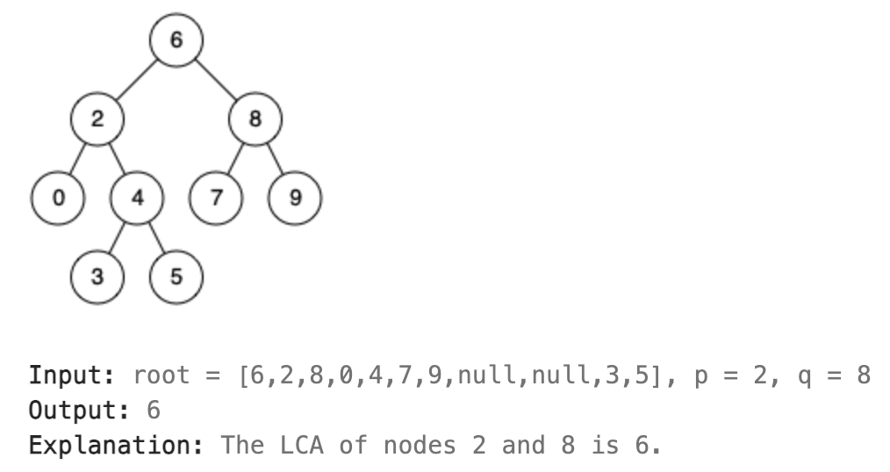
Source visual: nodes 2 and 8 meet at 6.
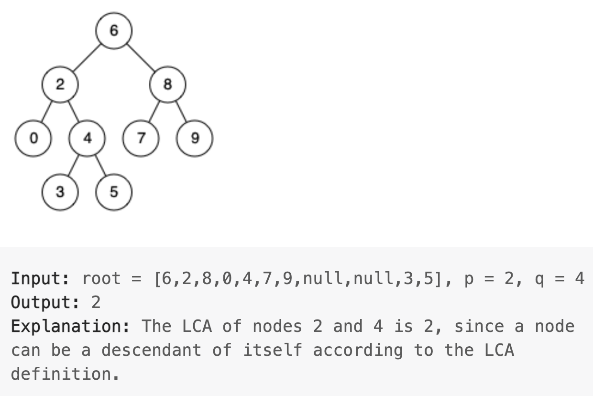
Source visual: a node may be its own ancestor.
Approach: The document follows BST ordering: recurse left if both values are smaller, right if both are larger, otherwise the current root separates them and is the answer.
Time: It makes one height computation per node rather than repeatedly recomputing subtree heights.
Space: Its only input-dependent auxiliary memory is the recursion path of height h.
32. First Bad Version
Problem: Find the first failing version when every version after it also fails.
Example 1
Input:n = 5, first bad version 4.
Output:4
Example 2
Input:n = 1, first bad version 1.
Output:1
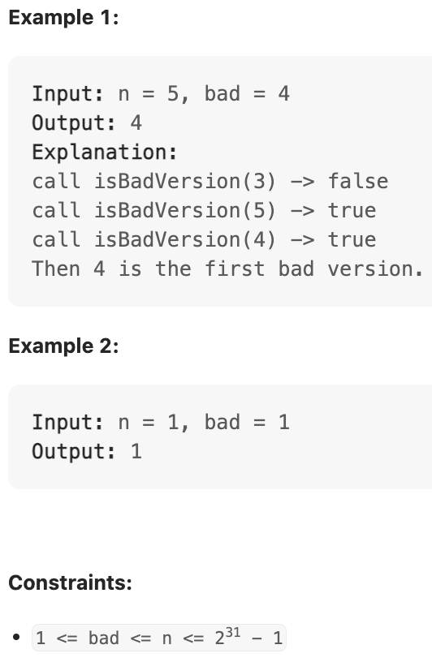
Source visual: successive version checks identify the first bad version.
Approach: The source uses binary search. On a bad middle version, it retains the lower half; on a good one, it retains the upper half. The final start is the first bad version.
Time: Each call to isBadVersion halves the remaining version interval.
Space: The iterative search stores only start, end, and middle.
33. Ransom Note
Problem: Return whether every letter of ransomNote can be supplied by magazine at most once.
Example 1
Input:ransomNote = "a", magazine = "b"
Output:false
Example 2
Input:ransomNote = "aa", magazine = "aab"
Output:true
Approach: The source counts available magazine letters, then decrements the matching counter for each ransom-note letter. A negative count means a required letter is unavailable.
Time: It performs a constant number of checks for each value.
Space: The returned list stores n strings.
36. Longest Substring with At Least K Repeating Characters
Problem: Find the longest substring in which every character occurs at least k times.
Example 1
Input:s = "aaabb", k = 3
Output:3
Example 2
Input:s = "ababbc", k = 2
Output:5
Approach: The source counts the current string. Any character occurring fewer than k times cannot belong to a valid answer, so the solution splits around it and solves the pieces recursively.
publicclassLongestSubstringKRepeats {
publicstaticvoidmain(String[] args) {
LongestSubstringKRepeatssolution = newLongestSubstringKRepeats();
System.out.println(solution.longestSubstring("aaabb", 3));
}
publicintlongestSubstring(Stringtext, intk) {
if (text.length() < k) return0;
int[] counts = newint[26];
for (intindex = 0; index < text.length(); index++) counts[text.charAt(index) - 'a']++;
for (intindex = 0; index < text.length(); index++) {
if (counts[text.charAt(index) - 'a'] >= k) continue;
intnext = index + 1;
while (next < text.length() && counts[text.charAt(next) - 'a'] < k) next++;
returnMath.max(longestSubstring(text.substring(0, index), k), longestSubstring(text.substring(next), k));
}
returntext.length();
}
}
TimeO(n²)SpaceO(n)
Time: Repeated splitting and substring creation can rescan characters across recursive calls, giving O(n²) in the worst case.
Space: Recursive calls and substring objects can retain O(n) data along a call path.
37. Kth Smallest Element in a Sorted Matrix
Problem: Find the kth smallest value in a matrix whose rows and columns are sorted.
Example 1
Input:[[1,5,9],[10,11,13],[12,13,15]], k = 8
Output:13
Example 2
Input:[[-5]], k = 1
Output:-5
Approach: The source binary-searches the value range. For each candidate value, it counts entries no larger than it by walking from the top-right corner.
Time: Each pointer moves inward over each position at most once.
Space: The source creates a character array copy of the input string.
41. Reverse Each Word and Capitalize
Problem: Reverse every word, capitalize its first character, and print the transformed words.
Example 1
Input:"how are you?"
Output:"Woh Era ?uoy"
Example 2
Input:"java code"
Output:"Avaj Edoc"
Approach: The source splits on spaces, reverses each word in a character array, then uppercases the first reversed character.
public classReverseWithACondition {
public static voidmain(String[] args) {
// Source example input.String text = "how are you?";
reverseCap(text);
}
public static voidreverseCap(String text) {
String[] words = text.split(" ");
for (int index = 0; index < words.length; index++) {
String reversedWord = reverseStr(words[index]);
char capitalizedFirst = Character.toUpperCase(reversedWord.charAt(0));
String restOfWord = reversedWord.substring(1).toLowerCase();
System.out.print(capitalizedFirst + restOfWord + " ");
}
}
public staticStringreverseStr(String inputString) {
int length = inputString.length();
int half = length / 2;
char[] inputArray = inputString.toCharArray();
for (int index = 0; index < half; index++) {
char temporary = inputArray[index];
inputArray[index] = inputArray[length - index - 1];
inputArray[length - index - 1] = temporary;
}
return newString(inputArray);
}
}
TimeO(n)SpaceO(n)
Time: Every input character is split, reversed, and printed once.
Space: Splitting and each word’s character array use space proportional to the text.
42. Implement Stack using Queues
Problem: Implement LIFO stack operations using one queue.
Example 1
Input:push(1), push(2), top(), pop(), empty()
Output:2, 2, false
Example 2
Input:push(7), pop(), empty()
Output:7, true
Approach: After enqueueing a pushed value, the source rotates earlier queue values behind it so the queue front behaves as the stack top.
import java.util.LinkedList;
import java.util.Queue;
public classStackUsingQueues {
public static voidmain(String[] args) {
MyStack stack = newMyStack();
stack.push(1);
stack.push(2);
System.out.println(stack.top());
System.out.println(stack.pop());
System.out.println(stack.empty());
}
// Uses one queue; rotation makes its front the stack top.static classMyStack {
privateQueue<Integer> queue;
publicMyStack() {
queue = newLinkedList<>();
}
public voidpush(int value) {
queue.add(value);
for (int index = 1; index < queue.size(); index++) {
queue.add(queue.remove());
}
}
public intpop() {
return queue.remove();
}
public inttop() {
return queue.peek();
}
public booleanempty() {
return queue.isEmpty();
}
}
}
Timepush O(n), pop/top O(1)SpaceO(n)
Time: Push rotates all existing queued values; pop and top read the front directly.
Space: The queue holds every stack value.
43. Implement Queue using Stacks
Problem: Implement FIFO queue operations with two stacks.
Example 1
Input:push(1), push(2), peek(), pop(), empty()
Output:1, 1, false
Example 2
Input:push(4), pop(), empty()
Output:4, true
Approach: The source pushes into an input stack. When output is empty, it transfers all input values, reversing their order so the oldest is on top.
import java.util.Stack;
public classQueueUsingStacks {
public static voidmain(String[] args) {
MyQueue queue = newMyQueue();
queue.push(1);
queue.push(2);
System.out.println(queue.peek());
System.out.println(queue.pop());
System.out.println(queue.empty());
}
static classMyQueue {
privateStack<Integer> input;
privateStack<Integer> output;
publicMyQueue() {
input = newStack<>();
output = newStack<>();
}
public voidpush(int value) {
input.push(value);
}
public intpop() {
// Transfer only when no front value is ready in output.if (output.isEmpty()) {
while (!input.isEmpty()) {
output.push(input.pop());
}
}
return output.pop();
}
public intpeek() {
if (output.isEmpty()) {
while (!input.isEmpty()) {
output.push(input.pop());
}
}
return output.peek();
}
public booleanempty() {
return input.isEmpty() && output.isEmpty();
}
}
}
Timeamortized O(1)SpaceO(n)
Time: Each value moves from input to output no more than once, making operations amortized O(1).
Space: The two stacks together store n values.
44. Top K Frequent Elements
Problem: Return the k most frequent values in an integer array.
Example 1
Input:[1,1,1,2,2,3], k = 2
Output:[1,2]
Example 2
Input:[1], k = 1
Output:[1]
Approach: The source counts values in a map, sorts the distinct values by descending map count, and copies the first k values.
import java.util.ArrayList;
import java.util.Arrays;
import java.util.Collections;
import java.util.HashMap;
import java.util.List;
import java.util.Map;
public classTopKFrequentElements {
public static voidmain(String[] args) {
int[] numbers = {1, 1, 1, 2, 2, 3};
int[] result = newTopKFrequentElements().topKFrequent(numbers, 2);
System.out.println(Arrays.toString(result));
}
public int[] topKFrequent(int[] numbers, int k) {
// Build a map from each number to its frequency.Map<Integer, Integer> frequency = newHashMap<>();
for (int number : numbers) {
frequency.put(number, frequency.getOrDefault(number, 0) + 1);
}
// Sort distinct values by their counts in descending order.List<Integer> values = newArrayList<>(frequency.keySet());
Collections.sort(values, (left, right) -> frequency.get(right) - frequency.get(left));
// Copy the first k values into the result array.int[] result = newint[k];
for (int index = 0; index < k; index++) {
result[index] = values.get(index);
}
return result;
}
}
Space: The map and distinct-value list each contain up to u entries.
45. Isomorphic Strings
Problem: Check whether characters in one string can map one-to-one to characters in another string.
Example 1
Input:"egg", "add"
Output:true
Example 2
Input:"foo", "bar"
Output:false
Approach: The source stores the last-seen position for both characters. Matching positions ensure mapping consistency in both directions.
public classIsomorphicStrings {
public static voidmain(String[] args) {
IsomorphicStrings solution = newIsomorphicStrings();
System.out.println(solution.isIsomorphic("egg", "add"));
}
public booleanisIsomorphic(String first, String second) {
if (first.length() != second.length()) {
return false;
}
// Track the last-seen position for each character in both strings.int[] firstMap = new int[256], secondMap = new int[256];
for (int index = 0; index < first.length(); index++) {
char from = first.charAt(index), to = second.charAt(index);
if (firstMap[from] != secondMap[to]) {
return false;
}
firstMap[from] = secondMap[to] = index + 1;
}
return true;
}
}
TimeO(n)SpaceO(1)
Time: It compares one pair of characters for each index.
Space: The two 256-entry arrays are fixed-size for the source character-set assumption.
46. Squares of a Sorted Array
Problem: Return squared values in non-decreasing order.
Example 1
Input:[-4,-1,0,3,10]
Output:[0,1,9,16,100]
Example 2
Input:[-7,-3,2,3,11]
Output:[4,9,9,49,121]
Approach: The source compares absolute values at both ends and fills the result from its largest position backward.
import java.util.Arrays;
public classSortedSquares {
public static voidmain(String[] args) {
int[] numbers = {-4, -1, 0, 3, 10};
int[] result = newSortedSquares().sortedSquares(numbers);
System.out.println(Arrays.toString(result));
}
public int[] sortedSquares(int[] numbers) {
int length = numbers.length;
int[] result = new int[length];
int left = 0, right = length - 1;
for (int index = length - 1; index >= 0; index--) {
if (Math.abs(numbers[left]) > Math.abs(numbers[right])) {
result[index] = numbers[left] * numbers[left++];
} else {
result[index] = numbers[right] * numbers[right--];
}
}
return result;
}
}
TimeO(n)SpaceO(n)
Time: Each endpoint advances at most n times.
Space: The returned result array has n positions.
47. Increasing Triplet Subsequence
Problem: Return whether there are indices i < j < k with increasing values.
Example 1
Input:[1,2,3,4,5]
Output:true
Example 2
Input:[5,4,3,2,1]
Output:false
Approach: The source tracks the smallest possible first and second values; a later value larger than both completes a triplet.
public classIncreasingTriplet {
public static voidmain(String[] args) {
int[] numbers = {1, 2, 3, 4, 5};
System.out.println(newIncreasingTriplet().increasingTriplet(numbers));
}
public booleanincreasingTriplet(int[] numbers) {
int first = Integer.MAX_VALUE, second = Integer.MAX_VALUE;
for (int value : numbers) {
if (value <= first) {
first = value;
} else if (value <= second) {
second = value;
} else {
return true;
}
}
return false;
}
}
TimeO(n)SpaceO(1)
Time: It scans the array once.
Space: Only two candidate values are stored.
48. Largest Perimeter Triangle
Problem: Return the largest valid triangle perimeter, or zero.
Example 1
Input:[2,1,2]
Output:5
Example 2
Input:[1,2,1,10]
Output:0
Approach: The source sorts and checks adjacent triples from largest down; the first satisfying the triangle inequality has the greatest perimeter.
import java.util.Arrays;
public classLargestPerimeterTriangle {
public static voidmain(String[] args) {
int[] values = {2, 1, 2};
System.out.println(newLargestPerimeterTriangle().largestPerimeter(values));
}
public intlargestPerimeter(int[] values) {
Arrays.sort(values);
for (int index = values.length - 3; index >= 0; index--) {
if (values[index] + values[index + 1] > values[index + 2]) {
return values[index] + values[index + 1] + values[index + 2];
}
}
return0;
}
}
TimeO(n log n)SpaceO(1)
Time: Sorting dominates the backward scan.
Space: Apart from the in-place sort, the method uses indices only.
Problem: Return the maximum average of a contiguous subarray of length k.
Example 1
Input:[1,12,-5,-6,50,3], k = 4
Output:12.75
Example 2
Input:[5], k = 1
Output:5.0
Approach: The source computes the first window sum, then slides it by adding the incoming value and removing the outgoing value.
public classMaximumAverageSubarray {
public static voidmain(String[] args) {
int[] numbers = {1, 12, -5, -6, 50, 3};
System.out.println(newMaximumAverageSubarray().findMaxAverage(numbers, 4));
}
public doublefindMaxAverage(int[] numbers, int k) {
int sum = 0;
for (int index = 0; index < k; index++) {
sum += numbers[index];
}
int maximum = sum;
for (int index = k; index < numbers.length; index++) {
// Add the incoming value and remove the value k positions behind.
sum += numbers[index] - numbers[index - k];
maximum = Math.max(maximum, sum);
}
return (double) maximum / k;
}
}
TimeO(n)SpaceO(1)
Time: Each value enters and leaves the window once.
Space: The method uses only scalar counters.
51. Pattern123
Problem: Print numbers from 1 through the current row number.
Example
Input:3
Output:1 / 1 2 / 1 2 3
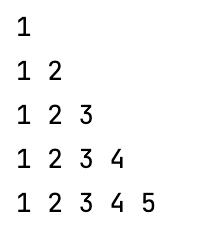
Source visual: ascending number pattern.
import java.util.Scanner;
public classPattern123 {
public static voidmain(String[] args) {
Scanner scanner = newScanner(System.in);
System.out.print("Enter the number of rows: ");
int numberOfRows = scanner.nextInt();
pattern123(numberOfRows);
}
public static voidpattern123(int numberOfRows) {
for (int row = 1; row <= numberOfRows; row++) {
for (int value = 1; value <= row; value++) {
System.out.print(value + " ");
}
System.out.println();
}
}
}
TimeO(n²)SpaceO(1)
Time: It prints 1 + 2 + ... + n values.
Space: Only loop counters are stored.
52. Pattern123Fibo
Problem: Print a Fibonacci sequence afresh on each row.
Example
Input:3
Output:1 / 1 2 / 1 2 3
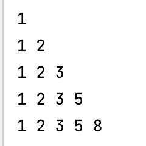
Source visual: the Fibonacci sequence resets per row.
import java.util.Scanner;
public classPattern123Fibo {
public static voidmain(String[] args) {
Scanner scanner = newScanner(System.in);
System.out.print("Enter the number of rows: ");
int numberOfRows = scanner.nextInt();
pattern123Fibo(numberOfRows);
}
public static voidpattern123Fibo(int numberOfRows) {
for (int row = 1; row <= numberOfRows; row++) {
int first = 0, second = 1;
for (int column = 1; column <= row; column++) {
int next = first + second;
first = second;
second = next;
System.out.print(next + " ");
}
System.out.println();
}
}
}
TimeO(n²)SpaceO(1)
Time: It prints a triangular total of values.
Space: Three variables are reused per row.
53. Pattern123EvenRepeat
Problem: Print odd row numbers once and even row numbers repeated by their value.
Example
Input: rows 1..9
Output begins:1 / 22 / 3 / 4444
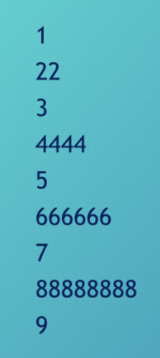
Source visual: odd rows print once; even rows repeat.
public classPattern123EvenRepeat {
public static voidmain(String[] args) {
// The source program always prints rows 1 through 9.patternEvenRepeat(9);
}
public static voidpatternEvenRepeat(int numberOfRows) {
for (int row = 1; row <= 9; row++) {
if (row % 2 == 0) {
for (int column = 1; column <= row; column++) {
System.out.print(row);
}
} else {
System.out.print(row);
}
System.out.println();
}
}
}
TimeO(1)SpaceO(1)
Time: The source loop is fixed at rows 1 through 9, so it always performs a bounded amount of printing.
Space: Only loop counters are used.
54. Print Numbers Using Recursion
Problem: Print numbers 1 through 12 without a loop.
Example 1
Input:1
Output:1 2 3 4 5 6 7 8 9 10 11 12
Example 2
Input:12
Output:12
Approach: The working source method prints the current value, then recurses only while it is at most 12.
public classRecursiveNumbers {
public static voidmain(String[] args) {
// Start the recursive sequence at 1.printNumbers(1);
}
public static voidprintNumbers(int number) {
if (number <= 12) {
System.out.print(number + " ");
printNumbers(number + 1);
}
}
}
TimeO(12), or O(n) for limit nSpaceO(12), or O(n)
Time: One call is made for each printed number.
Space: The recursive call stack reaches the number of printed values.
55. Swap Values without a Third Variable
Problem: Swap two integer values without a temporary third variable.
Example 1
Input:x = 50, y = 40
Output:x = 40, y = 50
Example 2
Input:x = 3, y = 8
Output:x = 8, y = 3
Approach: The source stores the combined total in x, then derives the original values through subtraction.
public classSwapValues {
public static voidmain(String[] args) {
int x = 50;
int y = 40;
System.out.println("Before swapping:");
System.out.println("x = " + x);
System.out.println("y = " + y);
// Swap the values of x and y.
x = x + y;
y = x - y;
x = x - y;
System.out.println("After swapping:");
System.out.println("x = " + x);
System.out.println("y = " + y);
}
}
TimeO(1)SpaceO(1)
Time: The swap uses exactly three arithmetic operations.
Space: It reuses the two supplied variables.
56. Print Highest and Second Highest Number in Array
Optimized implementation: The original document has only the title, so this linear-time solution has been added.
Example 1
Input:[12,35,1,10,34,1]
Output:[35,34]
Example 2
Input:[10,10,9]
Output:[10,9]
Approach: Keep the largest and second-largest distinct values seen so far in one pass.
import java.util.Arrays;
public classHighestAndSecondHighest {
public static voidmain(String[] args) {
int[] numbers = {12, 35, 1, 10, 34, 1};
System.out.println(Arrays.toString(findTwoLargest(numbers)));
}
public static int[] findTwoLargest(int[] numbers) {
int largest = 0, secondLargest = 0;
boolean hasLargest = false, hasSecondLargest = false;
for (int number : numbers) {
if (!hasLargest || number > largest) {
if (hasLargest) {
secondLargest = largest;
hasSecondLargest = true;
}
largest = number;
hasLargest = true;
} else if (number != largest && (!hasSecondLargest || number > secondLargest)) {
secondLargest = number;
hasSecondLargest = true;
}
}
if (!hasSecondLargest) {
throw newIllegalArgumentException("Two distinct values are required.");
}
return new int[] {largest, secondLargest};
}
}
TimeO(n)SpaceO(1)
Time: Each array value is compared with the two tracked values once.
Space: Only two integer variables are retained, regardless of input size.
57. Find Broken Links with Selenium WebDriver
Problem: Open a page, inspect its anchors, and report links whose HTTP response code is at least 400.
Example 1
Input: a page containing link URLs.
Output: each URL labelled valid or broken.
Example 2
Input: a 404 response.
Output:Broken Link: <url>
Approach: The source obtains all a elements, opens an HttpURLConnection for each href, and checks its response code.
Time: One HTTP request is made for each of l links; network latency dominates.
Space: Selenium retains the list of l matched link elements.
58. Print All Permutations of a String
Problem: Print every ordering of a string’s characters.
Example 1
Input:"abc"
Output:abc acb bac bca cab cba
Example 2
Input:"ab"
Output:ab ba
Approach 1: The source recursively swaps each candidate character into the current position, recurses, then swaps back to restore the input.
import java.util.Scanner;
public classStringPermutations {
public static voidmain(String[] args) {
Scanner scanner = newScanner(System.in);
System.out.print("Enter a string: ");
String input = scanner.nextLine();
System.out.println("Permutations of the string '" + input + "':");
printPermutations(input);
}
private static voidprintPermutations(String text) {
printPermutationsHelper(text, 0, text.length() - 1);
}
private static voidprintPermutationsHelper(String text, int left, int right) {
if (left == right) {
System.out.println(text);
} else {
for (int index = left; index <= right; index++) {
text = swap(text, left, index);
printPermutationsHelper(text, left + 1, right);
// Backtrack to restore the original character order.
text = swap(text, left, index);
}
}
}
private staticStringswap(String text, int first, int second) {
char[] characters = text.toCharArray();
char temporary = characters[first];
characters[first] = characters[second];
characters[second] = temporary;
return newString(characters);
}
}
TimeO(n × n!)SpaceO(n)
Time: There are n! permutations and printing/copying each string takes O(n).
Space: The recursion depth and temporary character arrays grow with n, excluding output.
Approach 2: The document also includes an iterative next-permutation method that finds a pivot, swaps with the next larger suffix value, then reverses the suffix.
import java.util.ArrayList;
import java.util.List;
public classIterativeStringPermutations {
public static voidmain(String[] args) {
String input = "abc";
List<String> permutations = generatePermutations(input);
System.out.println("Permutations of the string '" + input + "':");
for (String permutation : permutations) {
System.out.println(permutation);
}
}
private staticList<String> generatePermutations(String text) {
List<String> result = newArrayList<>();
result.add(text);
char[] characters = text.toCharArray();
while (true) {
int index = characters.length - 1;
while (index > 0 && characters[index - 1] >= characters[index]) {
index--;
}
if (index <= 0) {
break;
}
int swapIndex = characters.length - 1;
while (characters[swapIndex] <= characters[index - 1]) {
swapIndex--;
}
// Swap the pivot with the next larger character.char temporary = characters[index - 1];
characters[index - 1] = characters[swapIndex];
characters[swapIndex] = temporary;
// Reverse the suffix to obtain the next ordering.
swapIndex = characters.length - 1;
while (index < swapIndex) {
temporary = characters[index];
characters[index] = characters[swapIndex];
characters[swapIndex] = temporary;
index++;
swapIndex--;
}
result.add(newString(characters));
}
return result;
}
}
TimeO(n × n!)SpaceO(n × n!)
Time: It generates and stores every permutation, with O(n) work to build each resulting string.
Space: The returned list contains n! strings of length n.
59. Reverse Words in a String
Problem: Reverse the word order, normalize whitespace, and return a single-space-separated result.
Example 1
Input:"the sky is blue"
Output:"blue is sky the"
Example 2
Input:" hello world "
Output:"world hello"
Approach: The source splits on consecutive whitespace, iterates from the final word to the first, and trims the constructed result.
import java.util.Scanner;
public classReverseWordsInString {
public static voidmain(String[] args) {
Scanner scanner = newScanner(System.in);
System.out.print("Enter a sentence: ");
String input = scanner.nextLine();
System.out.println(newReverseWordsInString().reverseWords(input));
}
publicStringreverseWords(String text) {
String[] words = text.split("\\s+");
StringBuilder result = newStringBuilder();
for (int index = words.length - 1; index >= 0; index--) {
if (!words[index].isEmpty()) {
result.append(words[index]);
if (index > 0) {
result.append(" ");
}
}
}
return result.toString().trim();
}
}
TimeO(n)SpaceO(n)
Time: Splitting and the reverse traversal each process the input characters or words once.
Space: The split-word array and output builder together grow with the sentence length.
60. Product of Array Except Self
Problem: For each position, return the product of every other array value without division.
Example 1
Input:[1,2,3,4]
Output:[24,12,8,6]
Example 2
Input:[-1,1,0,-3,3]
Output:[0,0,9,0,0]
Approach: The source builds prefix products from the left and suffix products from the right, then multiplies matching positions.
import java.util.Arrays;
public classProductExceptSelf {
public static voidmain(String[] args) {
int[] numbers = {1, 2, 3, 4};
System.out.println(Arrays.toString(newProductExceptSelf().productExceptSelf(numbers)));
}
public int[] productExceptSelf(int[] numbers) {
int[] left = new int[numbers.length];
int[] right = new int[numbers.length];
left[0] = 1;
for (int index = 1; index < numbers.length; index++) {
left[index] = left[index - 1] * numbers[index - 1];
}
right[numbers.length - 1] = 1;
for (int index = numbers.length - 2; index > -1; index--) {
right[index] = right[index + 1] * numbers[index + 1];
}
int[] answer = new int[numbers.length];
for (int index = 0; index < numbers.length; index++) {
answer[index] = left[index] * right[index];
}
return answer;
}
}
TimeO(n)SpaceO(n)
Time: The source makes three linear passes: prefix products, suffix products, and the final multiplication.
Space: Its left, right, and answer arrays each have n positions.
61. Move Zeroes
Problem: Move zeroes to the end in place while preserving non-zero order.
Example 1
Input:[0,1,0,3,12]
Output:[1,3,12,0,0]
Example 2
Input:[0]
Output:[0]
Approach: The source scans with i; j marks the next non-zero position. Each non-zero is swapped into that position.
import java.util.Arrays;
public classMoveZeroesSource {
public static voidmain(String[] args) {
int[] numbers = {0, 1, 0, 3, 12};
newMoveZeroesSource().moveZeroes(numbers);
System.out.println(Arrays.toString(numbers));
}
public voidmoveZeroes(int[] numbers) {
int i = 0;
int j = 0;
while (i < numbers.length) {
if (numbers[i] == 0) {
i++;
} else {
swap(numbers, i, j);
i++;
j++;
}
}
}
public static voidswap(int[] numbers, int i, int j) {
// This helper is outside the scan loop, as in the source.int temporary = numbers[i];
numbers[i] = numbers[j];
numbers[j] = temporary;
}
}
TimeO(n)SpaceO(1)
Time: Pointer i advances through the array once; each swap is constant time.
Space: The method changes the given array and stores only indices and one temporary value.
62. Is Subsequence
Problem: Check whether the first string appears in the second string without changing character order.
Example 1
Input:s = "abc", t = "ahbgdc"
Output:true
Example 2
Input:s = "axc", t = "ahbgdc"
Output:false
Approach: The source advances the first pointer only on a matching character and always advances the second pointer.
public classIsSubsequence {
public static voidmain(String[] args) {
System.out.println(newIsSubsequence().isSubsequence("abc", "ahbgdc"));
}
public booleanisSubsequence(String first, String second) {
int i = 0, j = 0;
while (i < first.length() && j < second.length()) {
if (first.charAt(i) == second.charAt(j)) {
i++;
}
j++;
}
return i == first.length();
}
}
TimeO(s + t)SpaceO(1)
Time: Each pointer only moves forward, so together they inspect at most both string lengths.
Space: The source stores just two integer positions.
63. Container With Most Water
Problem: Choose two vertical lines that hold the greatest possible water area.
Example 1
Input:[1,8,6,2,5,4,8,3,7]
Output:49
Example 2
Input:[1,1]
Output:1
Approach: The source starts at both ends, records the area, then moves the pointer at the shorter line.
public classContainerWithMostWater {
public static voidmain(String[] args) {
int[] height = {1, 8, 6, 2, 5, 4, 8, 3, 7};
System.out.println(newContainerWithMostWater().maxArea(height));
}
public intmaxArea(int[] height) {
int left = 0;
int right = height.length - 1;
int maximum = 0;
while (left < right) {
int leftHeight = height[left];
int rightHeight = height[right];
int minimumHeight = Math.min(leftHeight, rightHeight);
maximum = Math.max(maximum, minimumHeight * (right - left));
if (leftHeight < rightHeight) {
left++;
} else {
right--;
}
}
return maximum;
}
}
TimeO(n)SpaceO(1)
Time: Each pointer moves inward at most n times and never reverses.
Space: Only a fixed set of variables stores the two pointers, heights, and maximum area.
64. Decode String
Problem: Decode nested expressions of the form k[encoded_string].
Example 1
Input:"3[a]2[bc]"
Output:"aaabcbc"
Example 2
Input:"3[a2[c]]"
Output:"accaccacc"
Approach: The source saves the current string and repeat count at each opening bracket, then appends the completed nested string when it reaches the matching closing bracket.
import java.util.Stack;
public classDecodeString {
public static voidmain(String[] args) {
System.out.println(newDecodeString().decodeString("3[a]2[bc]"));
}
publicStringdecodeString(String text) {
Stack<Integer> numberStack = newStack<>();
Stack<StringBuilder> stringStack = newStack<>();
StringBuilder current = newStringBuilder();
int number = 0;
for (char character : text.toCharArray()) {
if (character >= '0' && character <= '9') {
number = number * 10 + character - '0';
} else if (character == '[') {
stringStack.push(current);
current = newStringBuilder();
numberStack.push(number);
number = 0;
} else if (character == ']') {
StringBuilder temporary = current;
current = stringStack.pop();
int count = numberStack.pop();
while (count-- > 0) {
current.append(temporary);
}
} else {
current.append(character);
}
}
return current.toString();
}
}
TimeO(n + d)SpaceO(n + d)
Time: The source scans n encoded characters and performs append work for d decoded output characters.
Space: The stacks and string builders retain nested state and the decoded text, which can grow to the output size.
65. Reverse Linked List
Problem: Reverse a singly linked list and return its new head.
Example 1
Input:[1,2,3,4,5]
Output:[5,4,3,2,1]
Example 2
Input:[1,2]
Output:[2,1]
Approach: The source remembers the next node, reverses the current link to the previous node, then advances both references.
Time: This source recursion can revisit regions from more than one initial rotten cell, so the conservative worst case is quadratic in the number of cells.
Space: Recursive calls can reach the number of grid cells in a connected region.
71. Kth Largest Element in an Array
Problem: Return the kth largest value, counting duplicates.
Example 1
Input:[3,2,1,5,6,4], k = 2
Output:5
Example 2
Input:[3,2,3,1,2,4,5,5,6], k = 4
Output:4
Approach: The source puts all values in a descending priority queue, removes k - 1 values, then returns the next one.
import java.util.PriorityQueue;
public classKthLargestElement {
public static voidmain(String[] args) {
int[] numbers = {3, 2, 1, 5, 6, 4};
System.out.println(newKthLargestElement().findKthLargest(numbers, 2));
}
public intfindKthLargest(int[] numbers, int k) {
PriorityQueue<Integer> queue = newPriorityQueue<>((first, second) -> second - first);
for (int index = 0; index < numbers.length; index++) queue.add(numbers[index]);
for (int index = 0; index < k - 1; index++) queue.poll();
return queue.poll();
}
}
TimeO(n log n)SpaceO(n)
Time: Adding each of n values to the heap costs O(log n); the extra removals do not change that bound.
Space: The descending heap stores every array value.
72. Find Peak Element
Problem: Return the index of any value strictly larger than its neighbours.
Example 1
Input:[1,2,3,1]
Output:2
Example 2
Input:[1,2,1,3,5,6,4]
Output:5
Approach: Although the problem requests logarithmic time, the document’s code scans while tracking the greatest value seen and returns at the first descent.
public classFindPeakElement {
public static voidmain(String[] args) {
int[] numbers = {1, 2, 3, 1};
System.out.println(newFindPeakElement().findPeakElement(numbers));
}
public intfindPeakElement(int[] numbers) {
if (numbers.length < 2) return0;
int maximumIndex = 0;
for (int index = 1; index < numbers.length; index++) {
if (numbers[index] > numbers[maximumIndex]) maximumIndex = index;
if (numbers[index] < numbers[maximumIndex]) return maximumIndex;
}
return maximumIndex;
}
}
TimeO(n)SpaceO(1)
Time: The source has a single forward loop that can scan the entire array.
Space: It retains only the current index and the best index.
73. Letter Combinations of a Phone Number
Problem: Return every letter combination represented by digits 2–9.
Example 1
Input:"23"
Output:[ad, ae, af, bd, be, bf, cd, ce, cf]
Example 2
Input:""
Output:[]
Approach: The source maps digits to their letters and uses recursive backtracking to append, recurse, then remove each candidate letter.
Time: Up to four letters branch for each of n digits, and each completed string has length n.
Space: The result list stores all generated strings; recursion itself uses O(n) depth.
74. House Robber
Problem: Find the largest sum of non-adjacent house values.
Example 1
Input:[1,2,3,1]
Output:4
Example 2
Input:[2,7,9,3,1]
Output:12
Approach: The source DP array stores the best amount through each house: rob this one plus the best two houses back, or skip it and keep the previous best.
public classHouseRobber {
public static voidmain(String[] args) {
int[] houses = {2, 7, 9, 3, 1};
System.out.println(newHouseRobber().rob(houses));
}
public introb(int[] numbers) {
int length = numbers.length;
if (length == 0) {
return0;
}
if (length == 1) {
return numbers[0];
}
int[] dp = new int[length];
dp[0] = numbers[0];
dp[1] = Math.max(numbers[0], numbers[1]);
for (int index = 2; index < length; index++) {
dp[index] = Math.max(dp[index - 2] + numbers[index], dp[index - 1]);
}
return dp[length - 1];
}
}
TimeO(n)SpaceO(n)
Time: Initialization is constant and the DP loop computes one value for each remaining house.
Space: The source keeps a DP value for every house.
75. Unique Paths
Optimized implementation: The source contains no code; this uses the binomial-coefficient form instead of an O(mn) DP table.
Example 1
Input:m = 3, n = 7
Output:28
Example 2
Input:m = 3, n = 2
Output:3
Approach: Every path has m - 1 down moves and n - 1 right moves. Choose the positions of the smaller move group.
public classUniquePaths {
public static voidmain(String[] args) {
System.out.println(uniquePaths(3, 7));
}
public static intuniquePaths(int rows, int columns) {
int moves = rows + columns - 2;
int chosenMoves = Math.min(rows - 1, columns - 1);
long paths = 1;
for (int step = 1; step <= chosenMoves; step++) {
paths = paths * (moves - chosenMoves + step) / step;
}
return (int) paths;
}
}
TimeO(min(m,n))SpaceO(1)
Time: The loop computes only the smaller side of the binomial coefficient.
Space: It uses a constant number of numeric variables and does not allocate a DP grid.
76. Longest Common Subsequence
Problem: Return the length of the longest sequence shared by two strings without reordering either one.
Example 1
Input:"abcde", "ace"
Output:3
Example 2
Input:"abc", "def"
Output:0
Approach: The source’s DP solution compares each character pair; a match extends the diagonal subsequence, otherwise it keeps the longer upper or left result.
Time: The nested loops fill one DP cell for every pair of string positions.
Space: The source allocates an (m + 1) × (n + 1) table.
77. Edit Distance
Problem: Return the fewest insertions, deletions, and replacements needed to transform one word into another.
Example 1
Input:"horse", "ros"
Output:3
Example 2
Input:"intention", "execution"
Output:5
Approach: The source initializes the cost of converting to or from the empty string, then chooses the best of replace, delete, and insert for each unequal pair.
Problem: Find the value that appears once when every other value appears exactly twice.
Example 1
Input:[2,2,1]
Output:1
Example 2
Input:[4,1,2,1,2]
Output:4
Approach: The source XORs every value. Equal pairs cancel to zero, leaving the unpaired value.
public classSingleNumber {
public static voidmain(String[] args) {
int[] numbers = {4, 1, 2, 1, 2};
System.out.println(newSingleNumber().singleNumber(numbers));
}
public intsingleNumber(int[] numbers) {
int result = 0;
for (int value : numbers) {
result ^= value;
}
return result;
}
}
TimeO(n)SpaceO(1)
Time: The enhanced loop performs one XOR operation per array value.
Space: It uses one accumulator regardless of input length.
79. Implement Trie (Prefix Tree)
Optimized implementation: The document has no code; this fixed-alphabet trie gives constant child lookup per character.
Approach: Each node stores up to 26 lowercase-English child references and a flag for a complete word.
public classTrie {
private static classTrieNode {
TrieNode[] children = newTrieNode[26];
boolean isWord;
}
private finalTrieNode root = newTrieNode();
public static voidmain(String[] args) {
Trie trie = newTrie();
trie.insert("apple");
System.out.println(trie.search("apple"));
System.out.println(trie.startsWith("app"));
}
public voidinsert(String word) {
TrieNode node = root;
for (char letter : word.toCharArray()) {
int index = letter - 'a';
if (node.children[index] == null) {
node.children[index] = newTrieNode();
}
node = node.children[index];
}
node.isWord = true;
}
public booleansearch(String word) {
TrieNode node = findNode(word);
return node != null && node.isWord;
}
public booleanstartsWith(String prefix) {
returnfindNode(prefix) != null;
}
privateTrieNodefindNode(String text) {
TrieNode node = root;
for (char letter : text.toCharArray()) {
node = node.children[letter - 'a'];
if (node == null) {
returnnull;
}
}
return node;
}
}
TimeO(L) per operationSpaceO(total characters stored)
Time: Insert, exact search, and prefix search each visit one trie node per input character.
Space: New nodes are created only for character prefixes not already represented in the trie.
80. Minimum Number of Arrows to Burst Balloons
Problem: A balloon is represented by points[i] = [start, end], the inclusive horizontal interval covered by its diameter on an XY-plane wall. You may shoot any number of arrows vertically upward from positions on the x-axis. An arrow shot at x bursts every balloon for which start <= x <= end, and it continues upward indefinitely. Return the minimum number of arrows required to burst every balloon. The input contains at least one interval, each interval has two values, and 1 <= points.length <= 100000.
Example 1
Input:[[10,16],[2,8],[1,6],[7,12]]
Output:2
Explanation: An arrow at x = 6 bursts [1,6] and [2,8]; an arrow at x = 11 bursts [7,12] and [10,16].
Example 2
Input:[[1,2],[3,4],[5,6],[7,8]]
Output:4
Explanation: None of the intervals overlap, so each balloon needs a separate arrow.
Example 3
Input:[[1,2],[2,3],[3,4],[4,5]]
Output:2
Explanation: Arrows at x = 2 and x = 4 each burst two touching balloons.
Approach: The source sorts intervals by end position and shoots a new arrow only when the current balloon does not contain the prior arrow position.
import java.util.Arrays;
public classMinimumArrows {
public static voidmain(String[] args) {
int[][] points = {{10,16},{2,8},{1,6},{7,12}};
System.out.println(newMinimumArrows().findMinArrowShots(points));
}
public intfindMinArrowShots(int[][] points) {
Arrays.sort(points, (first, second) -> first[1] - second[1]);
long arrowShot = Long.MIN_VALUE;
int count = 0;
for (int index = 0; index < points.length; index++) {
if (arrowShot >= points[index][0] && arrowShot <= points[index][1]) {
continue;
} else {
arrowShot = points[index][1];
count++;
}
}
return count;
}
}
TimeO(n log n)SpaceO(1)
Time: Sorting intervals by end position dominates the one-pass selection.
Space: Apart from in-place sorting, the source uses one arrow position and a counter.
81. Daily Temperatures
Problem: For each day, return the waiting time for a warmer temperature.
Example 1
Input:[73,74,75,71,69,72,76,73]
Output:[1,1,4,2,1,1,0,0]
Example 2
Input:[30,40,50,60]
Output:[1,1,1,0]
Approach: The source keeps indices in a decreasing-temperature stack; a warmer day resolves every smaller temperature on top.
import java.util.*;
public classDailyTemperatures {
public static voidmain(String[] args) {
int[] temperatures = {73,74,75,71,69,72,76,73};
System.out.println(Arrays.toString(newDailyTemperatures().dailyTemperatures(temperatures)));
}
public int[] dailyTemperatures(int[] temperatures) {
Stack<Integer> stack = newStack<>();
int[] result = new int[temperatures.length];
for (int index = 0; index < temperatures.length; index++) {
while (!stack.isEmpty() && temperatures[index] > temperatures[stack.peek()]) {
int priorIndex = stack.pop();
result[priorIndex] = index - priorIndex;
}
stack.push(index);
}
return result;
}
}
TimeO(n)SpaceO(n)
Time: Each index enters and leaves the stack at most once.
Space: The result and worst-case decreasing stack both have n positions.
82. Majority Element
Problem: Return the value that occurs more than half the time.
Example 1
Input:[3,2,3]
Output:3
Example 2
Input:[2,2,1,1,1,2,2]
Output:2
Approach: The source uses Boyer–Moore voting: a different value cancels one vote; the guaranteed majority remains the candidate.
public classMajorityElement {
public static voidmain(String[] args) {
int[] numbers = {2,2,1,1,1,2,2};
System.out.println(newMajorityElement().majorityElement(numbers));
}
public intmajorityElement(int[] numbers) {
int count = 0, result = 0;
for (int number : numbers) {
if (count == 0) {
result = number;
}
if (number != result) {
count--;
} else {
count++;
}
}
return result;
}
}
TimeO(n)SpaceO(1)
Time: The source makes one pass through the values.
Space: It keeps only candidate and count.
83. Rotate Array
Problem: Rotate an array right by k steps.
Example 1
Input:[1,2,3,4,5,6,7], k = 3
Output:[5,6,7,1,2,3,4]
Example 2
Input:[-1,-100,3,99], k = 2
Output:[3,99,-1,-100]
Approach: The source reverses the entire array, then reverses the first k values and the remaining suffix.
import java.util.Arrays;
public classRotateArray {
public static voidmain(String[] args) {
int[] values = {1, 2, 3, 4, 5, 6, 7};
newRotateArray().rotate(values, 3);
System.out.println(Arrays.toString(values));
}
public voidrotate(int[] values, int k) {
k %= values.length;
reverse(values, 0, values.length - 1);
reverse(values, 0, k - 1);
reverse(values, k, values.length - 1);
}
public voidreverse(int[] values, int start, int end) {
while (start < end) {
int temporary = values[start];
values[start] = values[end];
values[end] = temporary;
start++;
end--;
}
}
}
TimeO(n)SpaceO(1)
Time: The three reversal ranges contain O(n) positions in total.
Space: Each reversal uses only one temporary integer.
84. Best Time to Buy and Sell Stock
Problem: Choose one buy day before one sell day to maximize profit.
Example 1
Input:[7,1,5,3,6,4]
Output:5
Example 2
Input:[7,6,4,3,1]
Output:0
Approach: The source keeps the lowest price seen so far, then compares the profit from selling at each later price.
public classBestTimeToBuySellStock {
public static voidmain(String[] args) {
int[] prices = {7, 1, 5, 3, 6, 4};
System.out.println(newBestTimeToBuySellStock().maxProfit(prices));
}
public intmaxProfit(int[] prices) {
if (prices == null || prices.length <= 1) {
return0;
}
int profit = 0;
int buyPrice = prices[0];
for (int index = 1; index < prices.length; index++) {
buyPrice = Math.min(buyPrice, prices[index]);
profit = Math.max(profit, prices[index] - buyPrice);
}
return profit;
}
}
TimeO(n)SpaceO(1)
Time: The source visits each price once after initialization.
Space: It keeps only the current lowest buy price and the best profit.
85. Best Time to Buy and Sell Stock II
Problem: Find the greatest profit when multiple transactions are allowed, but only one stock can be held at a time.
Example 1
Input:[7,1,5,3,6,4]
Output:7
Example 2
Input:[1,2,3,4,5]
Output:4
Approach: The source adds every positive difference between consecutive days. Together, those rises equal the profit from buying before and selling after each ascent.
public classBestTimeToBuySellStockTwo {
public static voidmain(String[] args) {
int[] prices = {7, 1, 5, 3, 6, 4};
System.out.println(newBestTimeToBuySellStockTwo().maxProfit(prices));
}
public intmaxProfit(int[] prices) {
int profit = 0;
for (int index = 1; index < prices.length; index++) {
if (prices[index] > prices[index - 1]) {
profit += prices[index] - prices[index - 1];
}
}
return profit;
}
}
TimeO(n)SpaceO(1)
Time: The one loop compares each price with its predecessor.
Space: The running profit is the only extra storage.
86. Jump Game
Problem: Determine whether the final array index can be reached when each value gives the maximum jump length from that position.
Example 1
Input:[2,3,1,1,4]
Output:true
Example 2
Input:[3,2,1,0,4]
Output:false
Approach: The source scans only indices within the current reachable range and expands that range whenever the current jump reaches farther.
public classJumpGame {
public static voidmain(String[] args) {
int[] jumps = {2, 3, 1, 1, 4};
System.out.println(newJumpGame().canJump(jumps));
}
public booleancanJump(int[] numbers) {
int length = numbers.length;
if (length == 1) {
returntrue;
}
int farthestReachable = 0;
for (int index = 0; farthestReachable >= index && index < length - 1; index++) {
if (farthestReachable < index + numbers[index]) {
farthestReachable = index + numbers[index];
}
if (farthestReachable >= length - 1) {
returntrue;
}
}
returnfalse;
}
}
TimeO(n)SpaceO(1)
Time: The source advances through at most every array index once.
Space: It records only the array length and one farthest-reachable index.
87. Jump Game II
Problem: Return the minimum number of jumps needed to reach the final index.
Example 1
Input:[2,3,1,1,4]
Output:2
Example 2
Input:[2,3,0,1,4]
Output:2
Approach: The source treats each jump as a range: it finds the farthest index available from the current range, then starts the next range there.
public classJumpGameTwo {
public static voidmain(String[] args) {
int[] jumps = {2, 3, 1, 1, 4};
System.out.println(newJumpGameTwo().jump(jumps));
}
public intjump(int[] numbers) {
int currentReach = 0;
int currentMaximum = 0;
int jumpCount = 0;
for (int index = 0; index < numbers.length - 1; index++) {
if (index + numbers[index] > currentMaximum) {
currentMaximum = index + numbers[index];
}
if (index == currentReach) {
jumpCount++;
currentReach = currentMaximum;
}
}
return jumpCount;
}
}
TimeO(n)SpaceO(1)
Time: The source examines each index before the last once.
Space: It uses three integer range counters.
88. Trapping Rain Water
Problem: Given bar heights, calculate the total water held after rain.
Example 1
Input:[0,1,0,2,1,0,1,3,2,1,2,1]
Output:6
Example 2
Input:[4,2,0,3,2,5]
Output:9
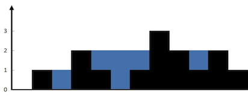
Source visual: water is bounded by higher bars on both sides.
Approach: The source keeps a pointer and highest wall from each side. It processes the side with the lower maximum because that side determines the water level there.
public classTrappingRainWater {
public static voidmain(String[] args) {
int[] height = {0, 1, 0, 2, 1, 0, 1, 3, 2, 1, 2, 1};
System.out.println(newTrappingRainWater().trap(height));
}
public inttrap(int[] height) {
int left = 0;
int right = height.length - 1;
int leftMaximum = Integer.MIN_VALUE;
int rightMaximum = Integer.MIN_VALUE;
int water = 0;
while (left < right) {
leftMaximum = Math.max(leftMaximum, height[left]);
rightMaximum = Math.max(rightMaximum, height[right]);
if (leftMaximum < rightMaximum) {
water += leftMaximum - height[left++];
} else {
water += rightMaximum - height[right--];
}
}
return water;
}
}
TimeO(n)SpaceO(1)
Time: Every loop step moves either the left or right pointer, so each bar is processed at most once.
Space: The source stores only two pointers, two maximum heights, and the total.
89. Roman to Integer
Problem: Convert a Roman numeral into its integer value.
Example 1
Input:"III"
Output:3
Example 2
Input:"MCMXCIV"
Output:1994
Approach: The source maps each Roman character to a value. A character is subtracted only when the next character has a larger value; otherwise it is added.
import java.util.HashMap;
import java.util.Map;
public classRomanToInteger {
public static voidmain(String[] args) {
System.out.println(newRomanToInteger().romanToInt("MCMXCIV"));
}
public intromanToInt(String roman) {
Map<Character, Integer> values = newHashMap<>();
values.put('I', 1);
values.put('V', 5);
values.put('X', 10);
values.put('L', 50);
values.put('C', 100);
values.put('D', 500);
values.put('M', 1000);
int result = 0;
for (int index = 0; index < roman.length(); index++) {
int currentValue = values.get(roman.charAt(index));
if (index < roman.length() - 1 && currentValue < values.get(roman.charAt(index + 1))) {
result -= currentValue;
} else {
result += currentValue;
}
}
return result;
}
}
TimeO(n)SpaceO(1)
Time: The source makes one pass through the n Roman characters.
Space: The symbol map always has seven entries, so its size does not grow with the input.
90. Longest Common Prefix
Problem: Return the longest starting substring shared by every string.
Example 1
Input:["flower","flow","flight"]
Output:"fl"
Example 2
Input:["dog","racecar","car"]
Output:""
Approach: The source sorts the array, then compares only the first and last strings. Those two have the greatest lexicographic separation, so their shared prefix is shared by all strings between them.
import java.util.Arrays;
public classLongestCommonPrefix {
public static voidmain(String[] args) {
String[] words = {"flower", "flow", "flight"};
System.out.println(newLongestCommonPrefix().longestCommonPrefix(words));
}
publicStringlongestCommonPrefix(String[] words) {
if (words == null || words.length == 0) {
return"";
}
Arrays.sort(words);
String first = words[0];
String last = words[words.length - 1];
int commonLength = 0;
while (commonLength < first.length()) {
if (first.charAt(commonLength) == last.charAt(commonLength)) {
commonLength++;
} else {
break;
}
}
return commonLength == 0 ? "" : first.substring(0, commonLength);
}
}
TimeO(n log n × m)SpaceO(n)
Time: The source sorts n strings; comparing strings during sorting can inspect up to m characters. The final first/last comparison is O(m).
Space: The source calls Java’s object-array sort, which can use an auxiliary array proportional to the number of strings; its own variables are constant-sized.
91. 3Sum
Problem: Return every unique triplet whose values total zero.
Example 1
Input:[-1,0,1,2,-1,-4]
Output:[[-1,-1,2],[-1,0,1]]
Example 2
Input:[0,1,1]
Output:[]
Approach: The source sorts the array, fixes one number, and moves two pointers inward. It stores found triplets in a set so duplicate triplets are removed.
import java.util.ArrayList;
import java.util.Arrays;
import java.util.HashSet;
import java.util.List;
import java.util.Set;
public classThreeSum {
public static voidmain(String[] args) {
int[] numbers = {-1, 0, 1, 2, -1, -4};
System.out.println(newThreeSum().threeSum(numbers));
}
publicList<List<Integer>> threeSum(int[] numbers) {
Set<List<Integer>> triplets = newHashSet<>();
if (numbers.length == 0) {
returnnewArrayList<>(triplets);
}
Arrays.sort(numbers);
for (int first = 0; first < numbers.length - 2; first++) {
int second = first + 1;
int third = numbers.length - 1;
while (second < third) {
int sum = numbers[first] + numbers[second] + numbers[third];
if (sum == 0) {
triplets.add(Arrays.asList(numbers[first], numbers[second++], numbers[third--]));
} else if (sum > 0) {
third--;
} else if (sum < 0) {
second++;
}
}
}
returnnewArrayList<>(triplets);
}
}
TimeO(n²)SpaceO(n)
Time: Sorting is O(n log n), then the fixed-index loop and its two pointers take O(n²) in total.
Space: The source set stores the distinct triplets it finds. The returned list contains the same output values.
92. Longest Substring Without Repeating Characters
Problem: Return the length of the longest contiguous substring with no repeated character.
Example 1
Input:"abcabcbb"
Output:3
Example 2
Input:"pwwkew"
Output:3
Approach: The source maintains a set for the current window. It expands the right pointer for new characters and removes from the left until a duplicate can be added.
import java.util.HashSet;
import java.util.Set;
public classLongestSubstringWithoutRepeating {
public static voidmain(String[] args) {
System.out.println(newLongestSubstringWithoutRepeating().lengthOfLongestSubstring("abcabcbb"));
}
public intlengthOfLongestSubstring(String text) {
int left = 0;
int right = 0;
int maximumLength = 0;
Set<Character> characters = newHashSet<>();
while (right < text.length()) {
if (!characters.contains(text.charAt(right))) {
characters.add(text.charAt(right++));
maximumLength = Math.max(maximumLength, characters.size());
} else {
characters.remove(text.charAt(left++));
}
}
return maximumLength;
}
}
TimeO(n)SpaceO(n)
Time: Each character is added by the right pointer once and removed by the left pointer at most once.
Space: The set can hold every distinct character in the current window, up to n characters.
93. Minimum Window Substring
Optimized implementation: The original document supplies no code; this is the linear sliding-window solution.
Example 1
Input:s = "ADOBECODEBANC", t = "ABC"
Output:"BANC"
Example 2
Input:s = "a", t = "aa"
Output:""
Approach: Expand the right edge until all target characters are covered, then shrink the left edge as far as possible while preserving coverage.
public classMinimumWindowSubstring {
public static voidmain(String[] args) {
System.out.println(minWindow("ADOBECODEBANC", "ABC"));
}
public staticStringminWindow(String source, String target) {
if (target.length() > source.length()) {
return"";
}
int[] needed = new int[128];
for (char character : target.toCharArray()) {
needed[character]++;
}
int remaining = target.length();
int bestStart = 0;
int bestLength = Integer.MAX_VALUE;
int left = 0;
for (int right = 0; right < source.length(); right++) {
char rightCharacter = source.charAt(right);
if (needed[rightCharacter]-- > 0) {
remaining--;
}
while (remaining == 0) {
if (right - left + 1 < bestLength) {
bestStart = left;
bestLength = right - left + 1;
}
char leftCharacter = source.charAt(left++);
if (++needed[leftCharacter] > 0) {
remaining++;
}
}
}
return bestLength == Integer.MAX_VALUE
? "" : source.substring(bestStart, bestStart + bestLength);
}
}
TimeO(s + t)SpaceO(1)
Time: Each source character enters the window once and leaves it at most once; the target is counted once.
Space: The fixed 128-entry frequency array is constant for the stated ASCII-character approach.
94. Spiral Matrix
Optimized implementation: The source provides the statement and visuals but no code; this visits each matrix cell once using shrinking boundaries.
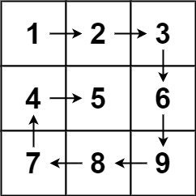
Source visual: clockwise traversal of a 3 × 3 matrix.
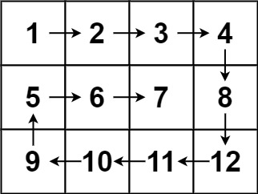
Source visual: clockwise traversal of a rectangular matrix.
Example 1
Input:[[1,2,3],[4,5,6],[7,8,9]]
Output:[1,2,3,6,9,8,7,4,5]
Example 2
Input:[[1,2,3,4],[5,6,7,8],[9,10,11,12]]
Output:[1,2,3,4,8,12,11,10,9,5,6,7]
Approach: Traverse the top row, right column, bottom row, and left column, then move each boundary inward.
import java.util.ArrayList;
import java.util.List;
public classSpiralMatrix {
public static voidmain(String[] args) {
int[][] matrix = {{1, 2, 3}, {4, 5, 6}, {7, 8, 9}};
System.out.println(spiralOrder(matrix));
}
public staticList<Integer> spiralOrder(int[][] matrix) {
List<Integer> order = newArrayList<>();
if (matrix == null || matrix.length == 0) {
return order;
}
int top = 0, bottom = matrix.length - 1;
int left = 0, right = matrix[0].length - 1;
while (top <= bottom && left <= right) {
for (int column = left; column <= right; column++) {
order.add(matrix[top][column]);
}
top++;
for (int row = top; row <= bottom; row++) {
order.add(matrix[row][right]);
}
right--;
if (top <= bottom) {
for (int column = right; column >= left; column--) {
order.add(matrix[bottom][column]);
}
bottom--;
}
if (left <= right) {
for (int row = bottom; row >= top; row--) {
order.add(matrix[row][left]);
}
left++;
}
}
return order;
}
}
TimeO(mn)SpaceO(1) excluding output
Time: Each of the m × n cells is added to the output exactly once.
Space: The traversal uses four boundary indices; the returned list accounts for O(mn) output storage.
95. Rotate Image
Problem: Rotate an n × n matrix clockwise by 90 degrees in place.
Source visual: clockwise rotation of a 3 × 3 matrix.Source visual: clockwise rotation of a 4 × 4 matrix.
Approach: The source first transposes the matrix across its main diagonal, then reverses each row. Together, these in-place operations create a clockwise rotation.
Time: The transpose and row-reversal loops each touch a quadratic number of matrix positions.
Space: The source rotates within the supplied matrix, using only one temporary integer for each swap.
96. Set Matrix Zeroes
Problem: If a matrix cell is zero, set its entire row and column to zero in place.
Example 1
Input:[[1,1,1],[1,0,1],[1,1,1]]
Output:[[1,0,1],[0,0,0],[1,0,1]]
Example 2
Input:[[0,1,2,0],[3,4,5,2],[1,3,1,5]]
Output:[[0,0,0,0],[0,4,5,0],[0,3,1,0]]
Source visual: one zero marks its row and column.
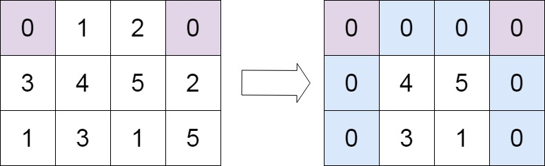
Source visual: the first row and column may also need zeroing.
Approach: The source uses the first row and first column as marker storage. Two booleans separately remember whether those marker lines themselves originally contained zero.
import java.util.Arrays;
public classSetMatrixZeroes {
public static voidmain(String[] args) {
int[][] matrix = {
{1, 1, 1},
{1, 0, 1},
{1, 1, 1}
};
newSetMatrixZeroes().setZeroes(matrix);
System.out.println(Arrays.deepToString(matrix));
}
public voidsetZeroes(int[][] matrix) {
int rows = matrix.length;
int columns = matrix[0].length;
boolean firstRowHasZero = false;
boolean firstColumnHasZero = false;
for (int column = 0; column < columns; column++) {
if (matrix[0][column] == 0) firstRowHasZero = true;
}
for (int row = 0; row < rows; row++) {
if (matrix[row][0] == 0) firstColumnHasZero = true;
}
for (int row = 1; row < rows; row++) {
for (int column = 1; column < columns; column++) {
if (matrix[row][column] == 0) {
matrix[row][0] = 0;
matrix[0][column] = 0;
}
}
}
for (int row = 1; row < rows; row++) {
for (int column = 1; column < columns; column++) {
if (matrix[0][column] == 0 || matrix[row][0] == 0) {
matrix[row][column] = 0;
}
}
}
if (firstRowHasZero) {
for (int column = 0; column < columns; column++) matrix[0][column] = 0;
}
if (firstColumnHasZero) {
for (int row = 0; row < rows; row++) matrix[row][0] = 0;
}
}
}
TimeO(mn)SpaceO(1)
Time: The source makes constant-number passes over the m × n matrix, so the total remains O(mn).
Space: The matrix’s first row and column serve as markers, and only two boolean flags are added.
97. Group Anagrams
Problem: Group strings which contain the same characters in a different order.
Approach: The source sorts the characters of every word to form a common key. Words with the same sorted key are placed in the same map value list.
import java.util.ArrayList;
import java.util.Arrays;
import java.util.HashMap;
import java.util.List;
import java.util.Map;
public classGroupAnagrams {
public static voidmain(String[] args) {
String[] words = {"eat", "tea", "tan", "ate", "nat", "bat"};
List<List<String>> groups = newGroupAnagrams().groupAnagrams(words);
for (List<String> group : groups) {
System.out.println(group);
}
}
publicList<List<String>> groupAnagrams(String[] words) {
Map<String, List<String>> groupsByKey = newHashMap<>();
for (String word : words) {
char[] characters = word.toCharArray();
Arrays.sort(characters);
String sortedWord = newString(characters);
List<String> anagrams = groupsByKey.getOrDefault(sortedWord, newArrayList<>());
anagrams.add(word);
groupsByKey.put(sortedWord, anagrams);
}
returnnewArrayList<>(groupsByKey.values());
}
}
TimeO(n × k log k)SpaceO(nk)
Time: For each of n words, the source sorts up to k characters to build its map key.
Space: The map stores every input word in its groups and keeps a sorted key for each distinct anagram group.
98. Two Sum
Problem: Find values or indices whose sum equals a target, using the separate approaches recorded in the source.
Example 1
Input:nums = [2,7,11,15], target = 9
Output:[0,1]
Example 2
Input:nums = [3,2,4], target = 6
Output:[1,2]
Solution 1: first matching index pair
Approach: The source checks whether the current value’s complement was already seen; if it was, it immediately returns those two indices.
import java.util.Arrays;
import java.util.HashMap;
import java.util.Map;
public classTwoSumFirstPair {
public static voidmain(String[] args) {
int[] numbers = {2, 7, 11, 15};
System.out.println(Arrays.toString(findTwoSum(numbers, 9)));
}
public static int[] findTwoSum(int[] numbers, int target) {
Map<Integer, Integer> numberToIndex = newHashMap<>();
for (int index = 0; index < numbers.length; index++) {
int complement = target - numbers[index];
if (numberToIndex.containsKey(complement)) {
returnnew int[] {numberToIndex.get(complement), index};
} else {
numberToIndex.put(numbers[index], index);
}
}
returnnew int[] {};
}
}
TimeO(n)SpaceO(n)
Time: Each number causes one map lookup and, at most, one insertion.
Space: The map can retain an index for every preceding number.
Solution 2: all matching index pairs
Approach: This recorded variation keeps scanning after a match and appends every index pair it discovers.
import java.util.ArrayList;
import java.util.HashMap;
import java.util.List;
import java.util.Map;
public classTwoSumAllPairs {
public static voidmain(String[] args) {
int[] numbers = {2, 7, 11, 15, 4, 5};
List<int[]> pairs = findTwoSum(numbers, 9);
for (int[] pair : pairs) System.out.println("[" + pair[0] + ", " + pair[1] + "]");
}
public staticList<int[]> findTwoSum(int[] numbers, int target) {
List<int[]> pairs = newArrayList<>();
Map<Integer, Integer> numberToIndex = newHashMap<>();
for (int index = 0; index < numbers.length; index++) {
int complement = target - numbers[index];
if (numberToIndex.containsKey(complement)) {
pairs.add(new int[] {numberToIndex.get(complement), index});
}
numberToIndex.put(numbers[index], index);
}
return pairs;
}
}
TimeO(n)SpaceO(n)
Time: The source still makes a single map-based pass over the numbers.
Space: The map requires up to n entries, and the returned list holds the matching pairs.
Solution 3: sorted value pairs
Approach: The source sorts the array, then moves left and right pointers inward to print non-repetitive value pairs that reach the target.
import java.util.Arrays;
public classTargetSumPair {
public static voidmain(String[] args) {
int[] values = {3, 6, 7, 1, 7, 4, 8, 15, 10, 12, 11};
targetSumPair(values, 10);
}
public static voidtargetSumPair(int[] values, int target) {
Arrays.sort(values);
int left = 0;
int right = values.length - 1;
while (left < right) {
if (values[left] + values[right] < target) {
left++;
} else if (values[left] + values[right] > target) {
right--;
} else {
System.out.println(values[left] + "," + values[right]);
left++;
right--;
}
}
}
}
TimeO(n log n)SpaceO(log n)
Time: Sorting dominates the following linear two-pointer scan.
Space: The source changes the supplied primitive array in place; Java’s primitive-array sort uses logarithmic stack space in the worst case.
Solution 4: last matching index pair
Approach: The final source variation keeps a map of values to indices and assigns the result whenever it sees a previously stored complement.
import java.util.Arrays;
import java.util.HashMap;
public classTwoSumLastPair {
public static voidmain(String[] args) {
int[] values = {3, 2, 4};
System.out.println(Arrays.toString(twoSum(values, 6)));
}
public static int[] twoSum(int[] values, int target) {
int[] result = new int[2];
HashMap<Integer, Integer> indices = newHashMap<>();
for (int index = 0; index < values.length; index++) {
if (indices.containsKey(target - values[index])) {
result[0] = index;
result[1] = indices.get(target - values[index]);
}
indices.put(values[index], index);
}
return result;
}
}
TimeO(n)SpaceO(n)
Time: Each element performs constant-time expected map work in one pass.
Space: The map can retain each value and its latest index.
99. Longest Consecutive Sequence
Problem: Return the length of the longest run of consecutive integers in an unsorted array.
Example 1
Input:[100,4,200,1,3,2]
Output:4
Example 2
Input:[0,3,7,2,5,8,4,6,0,1]
Output:9
Approach: The source removes an unvisited number from a set, expands down and up through adjacent values while removing them, then records that run’s length.
import java.util.HashSet;
import java.util.Set;
public classLongestConsecutiveSequence {
public static voidmain(String[] args) {
int[] numbers = {100, 4, 200, 1, 3, 2};
System.out.println(newLongestConsecutiveSequence().longestConsecutive(numbers));
}
public intlongestConsecutive(int[] numbers) {
if (numbers == null || numbers.length == 0) return0;
Set<Integer> remaining = newHashSet<>();
for (int number : numbers) remaining.add(number);
int maximumLength = 1;
for (int number : numbers) {
if (remaining.remove(number)) {
int value = number;
int length = 1;
while (remaining.remove(value - 1)) value--;
length += number - value;
value = number;
while (remaining.remove(value + 1)) value++;
length += value - number;
maximumLength = Math.max(maximumLength, length);
}
}
return maximumLength;
}
}
TimeO(n)SpaceO(n)
Time: Building the set is linear, and every distinct number is removed at most once while a sequence expands.
Space: The set contains the distinct input numbers.
100. Merge Intervals
Problem: Merge all overlapping intervals and return the non-overlapping coverage.
Example 1
Input:[[1,3],[2,6],[8,10],[15,18]]
Output:[[1,6],[8,10],[15,18]]
Example 2
Input:[[1,4],[4,5]]
Output:[[1,5]]
Approach: The source sorts by start value, maintains the current interval, extends it when the next interval overlaps, and otherwise saves it before starting a new one.
Approach: The source pushes the old minimum immediately before any new value that becomes the minimum. When that minimum is popped, the saved value restores it.
import java.util.Stack;
public classMinStackDemo {
public static voidmain(String[] args) {
MinStack minStack = newMinStack();
minStack.push(-2);
minStack.push(0);
minStack.push(-3);
System.out.println(minStack.getMin());
minStack.pop();
System.out.println(minStack.top());
System.out.println(minStack.getMin());
}
static classMinStack {
int minimum = Integer.MAX_VALUE;
Stack<Integer> stack = newStack<>();
public voidpush(int value) {
// Save the old minimum before replacing it.if (value <= minimum) {
stack.push(minimum);
minimum = value;
}
stack.push(value);
}
public voidpop() {
// Restore the previous minimum when the current one is removed.if (stack.pop() == minimum) minimum = stack.pop();
}
public inttop() {
return stack.peek();
}
public intgetMin() {
return minimum;
}
}
}
TimeO(1)SpaceO(n)
Time: Each operation performs only a fixed number of stack operations.
Space: In the worst case each pushed value is a new minimum, so the source stores one additional saved minimum per value.
103. Linked List Cycle
Problem: Determine whether a singly linked list contains a cycle.
Example 1
Input:head = [3,2,0,-4], pos = 1
Output:true
Example 2
Input:head = [1], pos = -1
Output:false
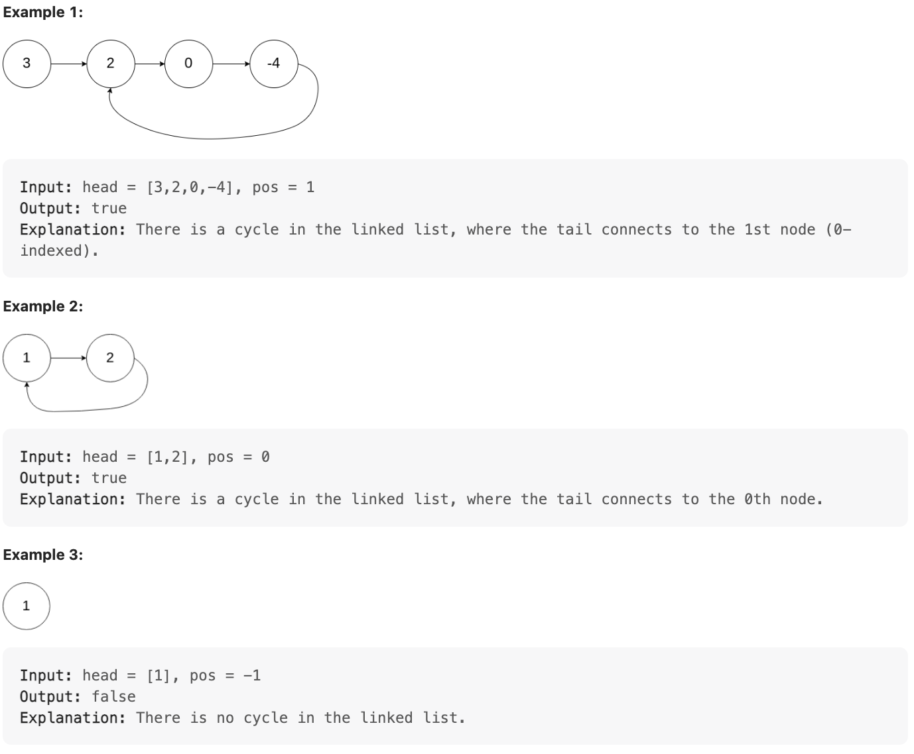
Source visual: the tail can point back into the list, creating a cycle.
Approach: The source uses Floyd’s slow and fast pointers. In a cycle, the fast pointer eventually catches the slow pointer; without one, it reaches the end.
public classLinkedListCycle {
static classListNode {
int value;
ListNode next;
ListNode(int value) { this.value = value; }
}
public static voidmain(String[] args) {
ListNode head = newListNode(3);
head.next = newListNode(2);
head.next.next = newListNode(0);
head.next.next.next = newListNode(-4);
head.next.next.next.next = head.next; // pos = 1
System.out.println(newLinkedListCycle().hasCycle(head));
}
public booleanhasCycle(ListNode head) {
ListNode slow = head;
ListNode fast = head;
while (fast != null && fast.next != null) {
slow = slow.next;
fast = fast.next.next;
if (slow == fast) returntrue;
}
returnfalse;
}
}
TimeO(n)SpaceO(1)
Time: Both pointers traverse at most a linear number of nodes before meeting or reaching null.
Space: The source stores only two node references.
104. Add Two Numbers
Problem: Add two non-negative integers represented by reverse-order linked lists.
Example 1
Input:[2,4,3] + [5,6,4]
Output:[7,0,8]
Example 2
Input:[0] + [0]
Output:[0]
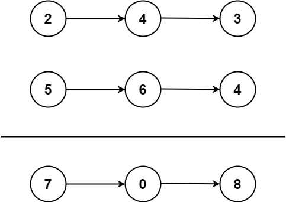
Source visual: 342 plus 465 becomes the reverse-order list 7 → 0 → 8.
Approach: The source walks both lists together, adds available digits and carry, appends the ones digit, and carries the tens digit forward.
public classAddTwoNumbers {
static classListNode {
int value;
ListNode next;
ListNode(int value) { this.value = value; }
}
public static voidmain(String[] args) {
ListNode first = fromValues(2, 4, 3);
ListNode second = fromValues(5, 6, 4);
printList(newAddTwoNumbers().addTwoNumbers(first, second));
}
publicListNodeaddTwoNumbers(ListNode first, ListNode second) {
ListNode dummy = newListNode(0);
ListNode current = dummy;
int carry = 0;
while (first != null || second != null || carry == 1) {
int sum = 0;
if (first != null) {
sum += first.value;
first = first.next;
}
if (second != null) {
sum += second.value;
second = second.next;
}
sum += carry;
carry = sum / 10;
ListNode node = newListNode(sum % 10);
current.next = node;
current = current.next;
}
return dummy.next;
}
staticListNodefromValues(int... values) {
ListNode dummy = newListNode(0);
ListNode current = dummy;
for (int value : values) {
current.next = newListNode(value);
current = current.next;
}
return dummy.next;
}
static voidprintList(ListNode node) {
while (node != null) {
System.out.print(node.value + " ");
node = node.next;
}
System.out.println();
}
}
TimeO(max(m,n))SpaceO(max(m,n))
Time: The loop advances through each of the two lists once, plus at most one final carry node.
Space: The returned linked list holds one node per output digit.
105. Merge Two Sorted Lists
Problem: Merge two sorted linked lists by reusing their existing nodes.
Example 1
Input:[1,2,4], [1,3,4]
Output:[1,1,2,3,4,4]
Example 2
Input:[], [0]
Output:[0]
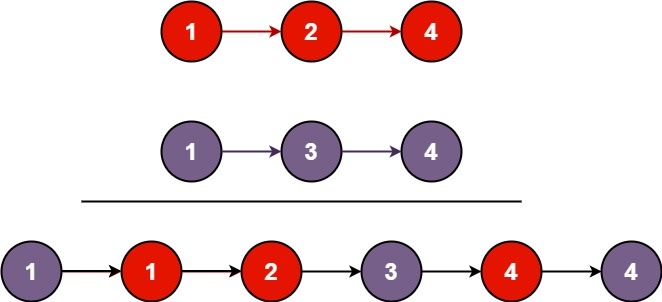
Source visual: nodes are selected in sorted order from the two input lists.
Approach: The source recursively selects the smaller head node and connects its next pointer to the result of merging the remaining lists.
public classMergeTwoSortedLists {
static classListNode {
int value;
ListNode next;
ListNode(int value) { this.value = value; }
}
public static voidmain(String[] args) {
ListNode first = fromValues(1, 2, 4);
ListNode second = fromValues(1, 3, 4);
printList(newMergeTwoSortedLists().mergeTwoLists(first, second));
}
publicListNodemergeTwoLists(ListNode first, ListNode second) {
if (first == null) return second;
if (second == null) return first;
if (first.value < second.value) {
first.next = mergeTwoLists(first.next, second);
return first;
} else {
second.next = mergeTwoLists(first, second.next);
return second;
}
}
staticListNodefromValues(int... values) {
ListNode dummy = newListNode(0);
ListNode current = dummy;
for (int value : values) {
current.next = newListNode(value);
current = current.next;
}
return dummy.next;
}
static voidprintList(ListNode node) {
while (node != null) {
System.out.print(node.value + " ");
node = node.next;
}
System.out.println();
}
}
TimeO(m + n)SpaceO(m + n)
Time: Each recursive call attaches one head node, so every node from both lists is considered once.
Space: The source’s recursion stack can grow to the combined list length; it reuses the list nodes themselves.
106. Copy List with Random Pointer
Optimized implementation: The original has no code; this interleaves copies with originals to avoid a hash map.
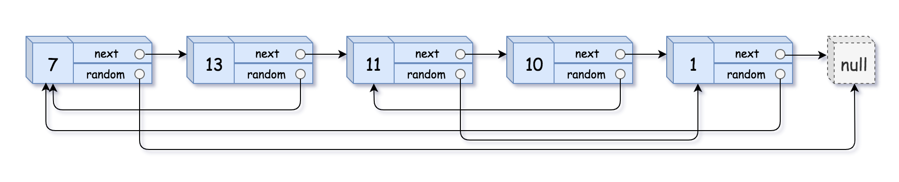
Source visual: a copy must preserve both next and random-pointer relationships.
Example 1
Input:[[7,null],[13,0],[11,4],[10,2],[1,0]]
Output:a deep copy with the same next and random links
Example 2
Input:[]
Output:null
Approach: Insert each copy after its original, assign each copy’s random link through the adjacent original, then detach the two lists.
public classCopyListWithRandomPointer {
static classNode {
int value;
Node next;
Node random;
Node(int value) {
this.value = value;
}
}
public static voidmain(String[] args) {
Node first = newNode(7);
first.next = newNode(13);
first.next.random = first;
Node copied = copyRandomList(first);
System.out.println(copied.value + ", " + copied.next.random.value);
}
public staticNodecopyRandomList(Node head) {
if (head == null) {
returnnull;
}
Node current = head;
while (current != null) {
Node copy = newNode(current.value);
copy.next = current.next;
current.next = copy;
current = copy.next;
}
current = head;
while (current != null) {
Node copy = current.next;
copy.random = current.random == null ? null : current.random.next;
current = copy.next;
}
Node copiedHead = head.next;
current = head;
while (current != null) {
Node copy = current.next;
current.next = copy.next;
copy.next = copy.next == null ? null : copy.next.next;
current = current.next;
}
return copiedHead;
}
}
TimeO(n)SpaceO(1) extra
Time: The list is traversed three times, each linear in its number of nodes.
Space: Copy nodes are the required output; no auxiliary map or collection is created.
107. Reverse Nodes in k-Group
Optimized implementation: The original has no code; this reverses complete groups in place with constant auxiliary space.
Source visual: each full group of two is reversed.Source visual: a final incomplete group remains unchanged.
Example 1
Input:[1,2,3,4,5], k = 2
Output:[2,1,4,3,5]
Example 2
Input:[1,2,3,4,5], k = 3
Output:[3,2,1,4,5]
Approach: Find the kth node ahead. If it exists, reverse that exact segment and connect it to the next group; otherwise leave the tail untouched.
Approach: The source combines an array from key to node with a doubly linked list. The node after the head is most recently used; the node before the tail is evicted when capacity is full.
Time: Array lookup and unlinking or linking a known doubly linked-list node are all constant-time operations.
Space: The source allocates a fixed 10,001-entry key table and retains up to capacity linked nodes.
109. Invert Binary Tree
Problem: Mirror a binary tree by swapping every node’s left and right subtrees.
Example 1
Input:[4,2,7,1,3,6,9]
Output:[4,7,2,9,6,3,1]
Example 2
Input:[]
Output:[]
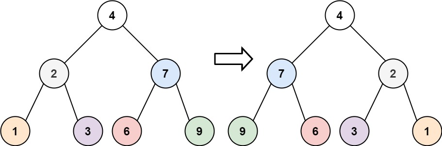
Source visual: each node’s two child subtrees are mirrored.
Approach: The source performs a recursive pre-order traversal. It remembers the left subtree, recursively inverts the right into the left position, then recursively inverts the remembered left into the right position.
Time: The recursive source visits every tree node once.
Space: The recursion stack holds one call per node along the current root-to-leaf path, whose height is h.
110. Symmetric Tree
Problem: Determine whether a binary tree is a mirror of itself around its center.
Example 1
Input:[1,2,2,3,4,4,3]
Output:true
Example 2
Input:[1,2,2,null,3,null,3]
Output:false
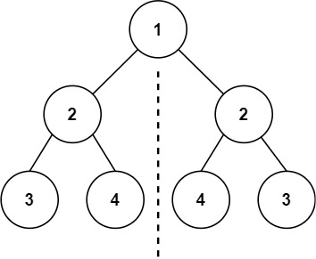
Source visual: matching values appear in opposite mirror positions.
Approach: The source recursively compares the left subtree’s outer and inner children against the corresponding mirrored children of the right subtree.
Time: Reverse-preorder traversal processes every tree node once.
Space: The only non-output storage is the recursion stack, up to tree height h.
113. Binary Tree Maximum Path Sum
Optimized implementation: The original has no code; this post-order solution computes the best usable downward gain at every node.
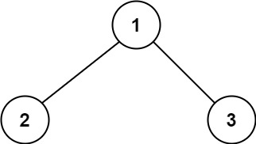
Source visual: the best path can pass through the root.
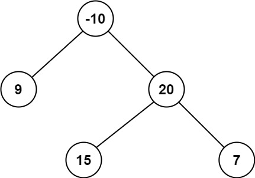
Source visual: the best path does not have to include the root.
Example 1
Input:[1,2,3]
Output:6
Example 2
Input:[-10,9,20,null,null,15,7]
Output:42
Approach: A path through a node can use positive gain from both children, while its parent can receive only one downward branch.
public classBinaryTreeMaximumPathSum {
static classTreeNode {
int value;
TreeNode left, right;
TreeNode(int value) {
this.value = value;
}
}
private int maximum = Integer.MIN_VALUE;
public static voidmain(String[] args) {
TreeNode root = newTreeNode(-10);
root.left = newTreeNode(9);
root.right = newTreeNode(20);
root.right.left = newTreeNode(15);
root.right.right = newTreeNode(7);
System.out.println(newBinaryTreeMaximumPathSum().maxPathSum(root));
}
public intmaxPathSum(TreeNode root) {
maximumGain(root);
return maximum;
}
private intmaximumGain(TreeNode node) {
if (node == null) {
return0;
}
int leftGain = Math.max(0, maximumGain(node.left));
int rightGain = Math.max(0, maximumGain(node.right));
maximum = Math.max(maximum, node.value + leftGain + rightGain);
return node.value + Math.max(leftGain, rightGain);
}
}
TimeO(n)SpaceO(h)
Time: The post-order traversal evaluates each node and its two gains once.
Space: Recursion holds at most one root-to-leaf path, whose length is h.
114. Binary Tree Level Order Traversal
Optimized implementation: The original has no code; breadth-first traversal processes one complete tree level at a time.
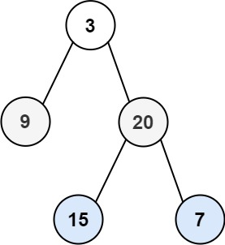
Source visual: output groups values one level at a time.
Example 1
Input:[3,9,20,null,null,15,7]
Output:[[3],[9,20],[15,7]]
Example 2
Input:[]
Output:[]
Approach: A queue holds the next level. Its size at the start of each outer iteration fixes the current output group.
import java.util.ArrayDeque;
import java.util.ArrayList;
import java.util.List;
import java.util.Queue;
public classBinaryTreeLevelOrder {
static classTreeNode {
int value;
TreeNode left, right;
TreeNode(int value) {
this.value = value;
}
}
public static voidmain(String[] args) {
TreeNode root = newTreeNode(3);
root.left = newTreeNode(9);
root.right = newTreeNode(20);
root.right.left = newTreeNode(15);
root.right.right = newTreeNode(7);
System.out.println(levelOrder(root));
}
public staticList<List<Integer>> levelOrder(TreeNode root) {
List<List<Integer>> levels = newArrayList<>();
if (root == null) {
return levels;
}
Queue<TreeNode> queue = newArrayDeque<>();
queue.add(root);
while (!queue.isEmpty()) {
int size = queue.size();
List<Integer> level = newArrayList<>(size);
for (int index = 0; index < size; index++) {
TreeNode node = queue.remove();
level.add(node.value);
if (node.left != null) {
queue.add(node.left);
}
if (node.right != null) {
queue.add(node.right);
}
}
levels.add(level);
}
return levels;
}
}
TimeO(n)SpaceO(n)
Time: Every node is removed from the queue and added to one output level once.
Space: The queue can contain a full tree level, and the returned levels contain all n values.
115. Kth Smallest Element in a BST
Problem: Return the kth smallest value in a binary search tree.
Example 1
Input:root = [3,1,4,null,2], k = 1
Output:1
Example 2
Input:root = [5,3,6,2,4,null,null,1], k = 3
Output:3
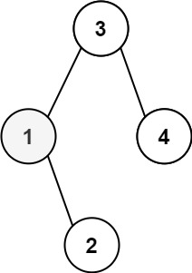
Source visual: an in-order traversal of a BST visits values in ascending order.
Approach: The source performs iterative in-order traversal with a stack. Each popped node is the next smallest value, so it stops after decrementing k to zero.
Time: The source descends a left spine and pops nodes in sorted order only until it reaches the kth one; h is tree height.
Space: The stack holds at most one root-to-leaf path.
116. Validate Binary Search Tree
Problem: Decide whether every node satisfies the strict binary-search-tree ordering rule.
Example 1
Input:[2,1,3]
Output:true
Example 2
Input:[5,1,4,null,null,3,6]
Output:false
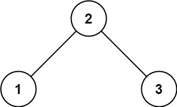
Source visual: in-order traversal of a valid BST must be strictly increasing.
Approach: The source uses iterative in-order traversal and compares every visited node with the previously visited node. A non-increasing value proves the tree is invalid.
Approach: The source scans every cell. When it finds land, depth-first search changes its whole connected component to water before increasing the island count.
Approach: Choose each unused value for the next position, recurse, then remove it to explore the next choice.
import java.util.ArrayList;
import java.util.List;
public classPermutations {
public static voidmain(String[] args) {
int[] numbers = {1, 2, 3};
System.out.println(permute(numbers));
}
public staticList<List<Integer>> permute(int[] numbers) {
List<List<Integer>> results = newArrayList<>();
buildPermutations(numbers, new boolean[numbers.length], newArrayList<>(), results);
return results;
}
private static voidbuildPermutations(
int[] numbers, boolean[] used, List<Integer> current,
List<List<Integer>> results
) {
if (current.size() == numbers.length) {
results.add(newArrayList<>(current));
return;
}
for (int index = 0; index < numbers.length; index++) {
if (used[index]) {
continue;
}
used[index] = true;
current.add(numbers[index]);
buildPermutations(numbers, used, current, results);
current.remove(current.size() - 1);
used[index] = false;
}
}
}
TimeO(n × n!)SpaceO(n) auxiliary
Time: There are n! output permutations and copying each one costs O(n).
Space: The active path, used array, and recursion depth each require O(n), excluding returned permutations.
120. Combination Sum
Problem: Return every unique combination of candidate values that totals the target; each value may be reused.
Example 1
Input:candidates = [2,3,6,7], target = 7
Output:[[2,2,3],[7]]
Example 2
Input:candidates = [2,3,5], target = 8
Output:[[2,2,2,2],[2,3,3],[3,5]]
Approach: The source backtracks from a starting candidate index. It may recurse with that same index to reuse a candidate, then removes the candidate when returning to try the next option.
import java.util.ArrayList;
import java.util.List;
public classCombinationSum {
List<List<Integer>> result = newArrayList<>();
ArrayList<Integer> currentCombination = newArrayList<>();
public static voidmain(String[] args) {
int[] candidates = {2, 3, 6, 7};
System.out.println(newCombinationSum().combinationSum(candidates, 7));
}
publicList<List<Integer>> combinationSum(int[] candidates, int target) {
findCombinations(candidates, target, 0);
return result;
}
public voidfindCombinations(int[] candidates, int remainingTarget, int startIndex) {
if (remainingTarget == 0) {
result.add(newArrayList<>(currentCombination));
return;
}
for (int index = startIndex; index < candidates.length; index++) {
if (candidates[index] <= remainingTarget) {
currentCombination.add(candidates[index]);
findCombinations(candidates, remainingTarget - candidates[index], index);
currentCombination.remove(currentCombination.size() - 1);
}
}
}
}
TimeO(n^(target / min))SpaceO(target / min)
Time: The source explores a branching search tree. Its deepest possible path repeatedly uses the smallest candidate, giving a depth of target / min; producing every valid combination is inherently exponential in that depth.
Space: The active combination and recursion stack can each reach target / min values, excluding the returned combinations.
121. Generate Parentheses
Optimized implementation: The original has no code; valid-prefix backtracking avoids generating invalid strings.
Example 1
Input:n = 3
Output:[((())),(()()),(())(),()(()) ,()()()]
Example 2
Input:n = 1
Output:[()]
Approach: Add an opening bracket while openings remain; add a closing bracket only when it cannot make the prefix invalid.
import java.util.ArrayList;
import java.util.List;
public classGenerateParentheses {
public static voidmain(String[] args) {
System.out.println(generateParenthesis(3));
}
public staticList<String> generateParenthesis(int pairs) {
List<String> results = newArrayList<>();
build(pairs, 0, 0, newStringBuilder(), results);
return results;
}
private static voidbuild(
int pairs, int opened, int closed,
StringBuilder current, List<String> results
) {
if (current.length() == pairs * 2) {
results.add(current.toString());
return;
}
if (opened < pairs) {
current.append('(');
build(pairs, opened + 1, closed, current, results);
current.deleteCharAt(current.length() - 1);
}
if (closed < opened) {
current.append(')');
build(pairs, opened, closed + 1, current, results);
current.deleteCharAt(current.length() - 1);
}
}
}
TimeO(Cₙ × n)SpaceO(n) auxiliary
Time: Cₙ valid strings are emitted, and each has length 2n.
Space: The builder and recursive call stack hold at most 2n characters, excluding returned strings.
122. Word Search
Problem: Determine whether a word can be formed by horizontally or vertically adjacent board cells without reusing a cell.
Example 1
Input:board = [[A,B,C,E],[S,F,C,S],[A,D,E,E]], word = "ABCCED"
Output:true
Example 2
Input: same board, word = "SEE"
Output:true
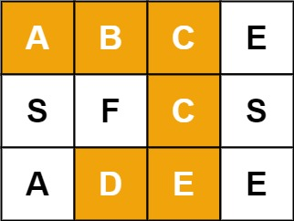
Source visual: adjacent highlighted cells spell the requested word.
Approach: The source tries every matching first cell, then recursively explores four directions while a separate visited matrix prevents the current path from reusing a cell.
public classWordSearch {
static boolean[][] visited;
public static voidmain(String[] args) {
char[][] board = {
{'A', 'B', 'C', 'E'},
{'S', 'F', 'C', 'S'},
{'A', 'D', 'E', 'E'}
};
System.out.println(newWordSearch().exist(board, "ABCCED"));
}
public booleanexist(char[][] board, String word) {
visited = new boolean[board.length][board[0].length];
for (int row = 0; row < board.length; row++) {
for (int column = 0; column < board[row].length; column++) {
if (word.charAt(0) == board[row][column] && search(board, word, row, column, 0)) returntrue;
}
}
returnfalse;
}
private booleansearch(char[][] board, String word, int row, int column, int index) {
if (index == word.length()) returntrue;
if (
row >= board.length || row < 0 ||
column >= board[row].length || column < 0 ||
board[row][column] != word.charAt(index) || visited[row][column]
) {
returnfalse;
}
visited[row][column] = true;
if (
search(board, word, row - 1, column, index + 1) ||
search(board, word, row + 1, column, index + 1) ||
search(board, word, row, column - 1, index + 1) ||
search(board, word, row, column + 1, index + 1)
) {
returntrue;
}
visited[row][column] = false;
returnfalse;
}
}
TimeO(mn × 4ˡ)SpaceO(mn + l)
Time: The source may start from each of m × n cells and branch to up to four neighbours for each of l word characters.
Space: It allocates an m × n visited matrix, and recursive calls can be as deep as the word length l.
123. Sort List
Optimized implementation: The original has no code; merge sort is optimal for a singly linked list because it needs no random access.
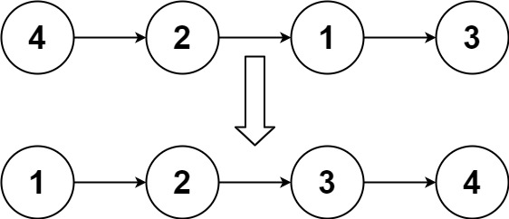
Source visual: a linked list is sorted into ascending order.
Example 1
Input:[4,2,1,3]
Output:[1,2,3,4]
Example 2
Input:[-1,5,3,4,0]
Output:[-1,0,3,4,5]
Approach: Split the list with slow and fast pointers, recursively sort both halves, then merge their existing nodes.
Time: Every merge-sort level visits all n nodes, and there are log n levels.
Space: Nodes are reused; only the divide-and-conquer call stack requires O(log n) space.
124. Merge k Sorted Lists
Problem: Merge an array of sorted linked lists into one sorted linked list.
Example 1
Input:[[1,4,5],[1,3,4],[2,6]]
Output:[1,1,2,3,4,4,5,6]
Example 2
Input:[]
Output:[]
Approach: The source recursively divides the list array in half, merges each half, then merges the two sorted results with a dummy-head iterative merge.
public classMergeKSortedLists {
static classListNode {
int value;
ListNode next;
ListNode(int value) { this.value = value; }
}
public static voidmain(String[] args) {
ListNode[] lists = {fromValues(1, 4, 5), fromValues(1, 3, 4), fromValues(2, 6)};
printList(newMergeKSortedLists().mergeKLists(lists));
}
publicListNodemergeKLists(ListNode[] lists) {
if (lists == null || lists.length == 0) returnnull;
returnmergeKListsHelper(lists, 0, lists.length - 1);
}
privateListNodemergeKListsHelper(ListNode[] lists, int start, int end) {
if (start == end) return lists[start];
if (start + 1 == end) returnmerge(lists[start], lists[end]);
int middle = start + (end - start) / 2;
ListNode left = mergeKListsHelper(lists, start, middle);
ListNode right = mergeKListsHelper(lists, middle + 1, end);
returnmerge(left, right);
}
privateListNodemerge(ListNode first, ListNode second) {
ListNode dummy = newListNode(0);
ListNode current = dummy;
while (first != null && second != null) {
if (first.value < second.value) {
current.next = first;
first = first.next;
} else {
current.next = second;
second = second.next;
}
current = current.next;
}
current.next = (first != null) ? first : second;
return dummy.next;
}
staticListNodefromValues(int... values) {
ListNode dummy = newListNode(0);
ListNode current = dummy;
for (int value : values) {
current.next = newListNode(value);
current = current.next;
}
return dummy.next;
}
static voidprintList(ListNode node) {
while (node != null) {
System.out.print(node.value + " ");
node = node.next;
}
System.out.println();
}
}
TimeO(n log k)SpaceO(log k)
Time: Each divide-and-conquer level merges every one of the n nodes, and there are log k levels for k input lists.
Space: The source reuses nodes for merging; the divide-and-conquer recursion has depth log k.
125. Maximum Subarray
Problem: Return the largest sum among all contiguous subarrays.
Example 1
Input:[-2,1,-3,4,-1,2,1,-5,4]
Output:6
Example 2
Input:[5,4,-1,7,8]
Output:23
Approach: The source applies Kadane’s recurrence: at each value, either begin a new subarray there or extend the previous one, then update the overall maximum.
public classMaximumSubarray {
public static voidmain(String[] args) {
int[] numbers = {-2, 1, -3, 4, -1, 2, 1, -5, 4};
System.out.println(newMaximumSubarray().maxSubArray(numbers));
}
public intmaxSubArray(int[] numbers) {
int maximumSum = numbers[0];
int currentSum = numbers[0];
for (int index = 1; index < numbers.length; index++) {
currentSum = Math.max(numbers[index], currentSum + numbers[index]);
maximumSum = Math.max(maximumSum, currentSum);
}
return maximumSum;
}
}
TimeO(n)SpaceO(1)
Time: The source computes its recurrence once for each array value.
Space: It retains only the current and overall maximum sums.
126. Search Insert Position
Problem: Return a target’s index in a sorted array, or the index where it belongs if absent.
Example 1
Input:nums = [1,3,5,6], target = 5
Output:2
Example 2
Input:nums = [1,3,5,6], target = 2
Output:1
Approach: The source uses ordinary binary search. If it does not find the target, the final left boundary is exactly the correct insertion position.
public classSearchInsertPosition {
public static voidmain(String[] args) {
int[] numbers = {1, 3, 5, 6};
System.out.println(newSearchInsertPosition().searchInsert(numbers, 2));
}
public intsearchInsert(int[] numbers, int target) {
int left = 0;
int right = numbers.length - 1;
while (left <= right) {
int middle = left + (right - left) / 2;
if (numbers[middle] == target) return middle;
else if (target < numbers[middle]) right = middle - 1;
else left = middle + 1;
}
return left;
}
}
TimeO(log n)SpaceO(1)
Time: Every binary-search iteration discards half of the remaining interval.
Space: The source keeps only left, right, and middle indices.
127. Search a 2D Matrix
Problem: Determine whether a target exists in a matrix whose rows are sorted and whose rows increase from top to bottom.
Source visual: the search starts at the top-right corner.
Approach: The source starts at the top-right cell. A value greater than the target eliminates its column; a smaller value eliminates its row.
public classSearch2DMatrix {
public static voidmain(String[] args) {
int[][] matrix = {{1, 3, 5, 7}, {10, 11, 16, 20}, {23, 30, 34, 60}};
System.out.println(newSearch2DMatrix().searchMatrix(matrix, 3));
}
public booleansearchMatrix(int[][] matrix, int target) {
int row = 0;
int column = matrix[0].length - 1;
while (row < matrix.length && column >= 0) {
if (matrix[row][column] == target) returntrue;
else if (matrix[row][column] > target) column--;
else row++;
}
returnfalse;
}
}
TimeO(m + n)SpaceO(1)
Time: Each iteration moves exactly one step down or one step left, so there are at most m + n moves.
Space: The source stores only the current row and column.
128. Search in Rotated Sorted Array
Optimized implementation: The original has no code; modified binary search identifies which half remains sorted at each step.
Example 1
Input:[4,5,6,7,0,1,2], target = 0
Output:4
Example 2
Input:[4,5,6,7,0,1,2], target = 3
Output:-1
Approach: One side of the current interval is always sorted. Test whether the target belongs in that side before discarding the other.
public classSearchRotatedSortedArray {
public static voidmain(String[] args) {
int[] numbers = {4, 5, 6, 7, 0, 1, 2};
System.out.println(search(numbers, 0));
}
public static intsearch(int[] numbers, int target) {
int left = 0, right = numbers.length - 1;
while (left <= right) {
int middle = left + (right - left) / 2;
if (numbers[middle] == target) {
return middle;
}
if (numbers[left] <= numbers[middle]) {
if (numbers[left] <= target && target < numbers[middle]) {
right = middle - 1;
} else {
left = middle + 1;
}
} else if (numbers[middle] < target && target <= numbers[right]) {
left = middle + 1;
} else {
right = middle - 1;
}
}
return -1;
}
}
TimeO(log n)SpaceO(1)
Time: Each iteration discards half of the remaining search interval.
Space: The iterative search uses only left, right, and middle indices.
129. Find First and Last Position of Element in Sorted Array
Problem: Return the first and last indices of a target in a sorted array, or [-1,-1] when absent.
Example 1
Input:nums = [5,7,7,8,8,10], target = 8
Output:[3,4]
Example 2
Input:nums = [5,7,7,8,8,10], target = 6
Output:[-1,-1]
Approach: The source runs binary search twice: on a match it continues left for the first occurrence and right for the last occurrence.
import java.util.Arrays;
public classFirstLastPosition {
public static voidmain(String[] args) {
int[] numbers = {5, 7, 7, 8, 8, 10};
System.out.println(Arrays.toString(newFirstLastPosition().searchRange(numbers, 8)));
}
public int[] searchRange(int[] numbers, int target) {
int[] result = {-1, -1};
result[0] = binarySearch(numbers, target, true);
result[1] = binarySearch(numbers, target, false);
return result;
}
private intbinarySearch(int[] numbers, int target, boolean firstOccurrence) {
int index = -1;
int left = 0;
int right = numbers.length - 1;
while (left <= right) {
int middle = left + (right - left) / 2;
if (numbers[middle] == target) {
index = middle;
if (firstOccurrence) right = middle - 1;
else left = middle + 1;
} else if (numbers[middle] < target) left = middle + 1;
else right = middle - 1;
}
return index;
}
}
TimeO(log n)SpaceO(1)
Time: The source performs two independent binary searches, which is still O(log n).
Space: It uses a two-element result array and a fixed number of index variables.
130. Find Minimum in Rotated Sorted Array
Problem: Return the smallest value from a rotated ascending array of distinct values.
Example 1
Input:[3,4,5,1,2]
Output:1
Example 2
Input:[4,5,6,7,0,1,2]
Output:0
Approach: The source keeps a smallest value seen and uses comparisons around the middle of the current range to discard a sorted half or move toward the rotation point.
public classFindMinimumRotatedArray {
public static voidmain(String[] args) {
int[] numbers = {4, 5, 6, 7, 0, 1, 2};
System.out.println(newFindMinimumRotatedArray().findMin(numbers));
}
public intfindMin(int[] numbers) {
int length = numbers.length;
int left = 0;
int right = length - 1;
int middle = 0;
int minimum = numbers[left];
while (left <= right) {
middle = (left + right) / 2;
if (numbers[middle] < minimum) {
minimum = numbers[middle];
} else if (numbers[left] < numbers[middle]) {
if (numbers[middle] < numbers[right]) right = middle - 1;
else left = middle + 1;
} else {
if (numbers[middle] < numbers[right]) right = middle - 1;
else left = middle + 1;
}
}
return minimum;
}
}
TimeO(log n)SpaceO(1)
Time: Each source iteration shrinks the active search range by roughly half.
Space: It stores only indices and the smallest value encountered.
131. Median of Two Sorted Arrays
Problem: Return the median value of two individually sorted arrays.
Example 1
Input:[1,3], [2]
Output:2.0
Example 2
Input:[1,2], [3,4]
Output:2.5
Approach: The source partially merges the arrays only until it reaches the middle, retaining the two most recently selected values for an even total length.
public classMedianTwoSortedArrays {
public static voidmain(String[] args) {
int[] first = {1, 2};
int[] second = {3, 4};
System.out.println(newMedianTwoSortedArrays().findMedianSortedArrays(first, second));
}
public doublefindMedianSortedArrays(int[] first, int[] second) {
int firstIndex = 0;
int secondIndex = 0;
int previousMedian = 0;
int currentMedian = 0;
for (int index = 0; index <= (first.length + second.length) / 2; index++) {
previousMedian = currentMedian;
if (firstIndex == first.length) {
currentMedian = second[secondIndex++];
} else if (secondIndex == second.length) {
currentMedian = first[firstIndex++];
} else if (first[firstIndex] < second[secondIndex]) {
currentMedian = first[firstIndex++];
} else {
currentMedian = second[secondIndex++];
}
}
if ((first.length + second.length) % 2 == 0) return (float) (previousMedian + currentMedian) / 2;
return currentMedian;
}
}
TimeO(m + n)SpaceO(1)
Time: The source advances pointers through at most half of the combined arrays, which is linear in m + n in the worst case.
Space: It keeps two indices and two median candidates without building a merged array.
132. Find Median from Data Stream
Problem: Add stream values and return the median after any number of insertions.
Example 1
Input:addNum(1), addNum(2), findMedian()
Output:1.5
Example 2
Input:addNum(3), findMedian()
Output:2.0
Approach: The source keeps the lower half in a max heap and the upper half in a min heap. Its boolean ensures the lower heap receives the extra element when the count is odd.
import java.util.Collections;
import java.util.PriorityQueue;
public classMedianDataStream {
public static voidmain(String[] args) {
MedianFinder finder = newMedianFinder();
finder.addNum(1);
finder.addNum(2);
System.out.println(finder.findMedian());
finder.addNum(3);
System.out.println(finder.findMedian());
}
static classMedianFinder {
privatePriorityQueue<Integer> small = newPriorityQueue<>(Collections.reverseOrder());
privatePriorityQueue<Integer> large = newPriorityQueue<>();
private boolean even = true;
public doublefindMedian() {
if (even) return (small.peek() + large.peek()) / 2.0;
elsereturn small.peek();
}
public voidaddNum(int number) {
if (even) {
large.offer(number);
small.offer(large.poll());
} else {
small.offer(number);
large.offer(small.poll());
}
even = !even;
}
}
}
TimeO(log n) add, O(1) medianSpaceO(n)
Time: Adding a value performs heap insertions and removals, each O(log n); reading the one or two heap tops is O(1).
Space: The two heaps retain every streamed value.
133. Climbing Stairs
Problem: Count distinct ways to reach step n using one- or two-step moves.
Example 1
Input:n = 2
Output:2
Example 2
Input:n = 3
Output:3
Approach: The source iteratively computes the Fibonacci-style recurrence, retaining only the two previous step counts.
public classClimbingStairs {
public static voidmain(String[] args) {
System.out.println(newClimbingStairs().climbStairs(3));
}
public intclimbStairs(int steps) {
if (steps == 0 || steps == 1) return1;
int previous = 1;
int current = 1;
for (int step = 2; step <= steps; step++) {
int temporary = current;
current = previous + current;
previous = temporary;
}
return current;
}
}
TimeO(n)SpaceO(1)
Time: The source loops once for every step from 2 through n.
Space: It retains only the previous, current, and temporary counts.
134. Word Break
Problem: Determine whether a string can be segmented into one or more dictionary words.
Approach: The source uses a boolean DP array where dp[i] means the prefix ending before position i can be segmented. It only tests substrings no longer than the longest dictionary word.
import java.util.Arrays;
import java.util.List;
public classWordBreak {
public static voidmain(String[] args) {
List<String> dictionary = Arrays.asList("leet", "code");
System.out.println(newWordBreak().wordBreak("leetcode", dictionary));
}
public booleanwordBreak(String text, List<String> dictionary) {
int length = text.length();
boolean[] canSegment = new boolean[length + 1];
canSegment[0] = true;
int maximumWordLength = 0;
for (String word : dictionary) maximumWordLength = Math.max(maximumWordLength, word.length());
for (int end = 1; end <= length; end++) {
for (int start = end - 1; start >= Math.max(end - maximumWordLength - 1, 0); start--) {
if (canSegment[start] && dictionary.contains(text.substring(start, end))) {
canSegment[end] = true;
break;
}
}
}
return canSegment[length];
}
}
TimeO(n × d × L²)SpaceO(n)
Time: The source tries up to L ending substrings at each of n positions. Because the dictionary remains a list, contains may scan d words and compare up to L characters.
Space: The DP array has one boolean entry for every text prefix.
135. Coin Change
Problem: Return the fewest coins needed to total an amount, or -1 if the amount is impossible.
Example 1
Input:coins = [1,2,5], amount = 11
Output:3
Example 2
Input:coins = [2], amount = 3
Output:-1
Approach: The source fills a DP array with an unreachable sentinel. For each coin, it improves every reachable amount using the best result for the amount one coin smaller.
Space: Only one row of n minimum sums is kept instead of an m × n table.
139. Longest Palindromic Substring
Problem: Return the longest contiguous palindrome in a string.
Example 1
Input:"babad"
Output:"bab"
Example 2
Input:"cbbd"
Output:"bb"
Approach: The source expands around every possible odd and even center, retaining the start and end of the longest expansion found.
public classLongestPalindromicSubstring {
public static voidmain(String[] args) {
System.out.println(newLongestPalindromicSubstring().longestPalindrome("babad"));
}
publicStringlongestPalindrome(String text) {
int start = 0;
int end = 0;
for (int center = 0; center < text.length() - 1; center++) {
int oddLength = pal(text, center, center);
int evenLength = pal(text, center, center + 1);
int length = Math.max(oddLength, evenLength);
if (length > end - start) {
start = center - (length - 1) / 2;
end = center + length / 2;
System.out.println(start + " " + end);
}
}
return text.substring(start, end + 1);
}
intpal(String text, int start, int end) {
while (start >= 0 && end <= text.length() - 1 && text.charAt(start) == text.charAt(end)) {
start--;
end++;
}
return end - start - 1;
}
}
TimeO(n²)SpaceO(1)
Time: The source tries O(n) centers, and each expansion can compare O(n) characters.
Space: It keeps only center boundaries and lengths.
140. Remove Nth Node From End of List
Optimized implementation: The original has no code; two pointers remove the requested node in one pass.
Source visual: removing the second node from the end removes value 4.
Example 1
Input:[1,2,3,4,5], n = 2
Output:[1,2,3,5]
Example 2
Input:[1], n = 1
Output:[]
Approach: Advance the first pointer n nodes ahead, then move both pointers until the first reaches the end. The second then precedes the node to remove.
public classRemoveNthNodeFromEnd {
static classListNode {
int value;
ListNode next;
ListNode(int value) {
this.value = value;
}
}
public static voidmain(String[] args) {
ListNode head = fromValues(1, 2, 3, 4, 5);
printList(removeNthFromEnd(head, 2));
}
public staticListNoderemoveNthFromEnd(ListNode head, int n) {
ListNode dummy = newListNode(0);
dummy.next = head;
ListNode first = dummy, second = dummy;
for (int count = 0; count <= n; count++) {
first = first.next;
}
while (first != null) {
first = first.next;
second = second.next;
}
second.next = second.next.next;
return dummy.next;
}
private staticListNodefromValues(int... values) {
ListNode dummy = newListNode(0);
ListNode tail = dummy;
for (int value : values) {
tail.next = newListNode(value);
tail = tail.next;
}
return dummy.next;
}
private static voidprintList(ListNode node) {
while (node != null) {
System.out.print(node.value + " ");
node = node.next;
}
System.out.println();
}
}
TimeO(n)SpaceO(1)
Time: The two pointers collectively traverse the list a constant number of times.
Space: Only a dummy node and two list references are used.
141. Insert Interval
Optimized implementation: The original has no code; a single ordered scan copies, merges, then copies intervals.
Example 1
Input:[[1,3],[6,9]], [2,5]
Output:[[1,5],[6,9]]
Example 2
Input:[[1,2],[3,5],[6,7],[8,10],[12,16]], [4,8]
Output:[[1,2],[3,10],[12,16]]
Approach: Add intervals ending before the new interval, merge overlapping ranges, then append all remaining ranges.
import java.util.ArrayList;
import java.util.Arrays;
import java.util.List;
public classInsertInterval {
public static voidmain(String[] args) {
int[][] intervals = {{1, 3}, {6, 9}};
System.out.println(Arrays.deepToString(insert(intervals, new int[] {2, 5})));
}
public static int[][] insert(int[][] intervals, int[] newInterval) {
List<int[]> merged = newArrayList<>();
int index = 0;
while (index < intervals.length && intervals[index][1] < newInterval[0]) {
merged.add(intervals[index++]);
}
while (index < intervals.length && intervals[index][0] <= newInterval[1]) {
newInterval[0] = Math.min(newInterval[0], intervals[index][0]);
newInterval[1] = Math.max(newInterval[1], intervals[index][1]);
index++;
}
merged.add(newInterval);
while (index < intervals.length) {
merged.add(intervals[index++]);
}
return merged.toArray(new int[merged.size()][]);
}
}
TimeO(n)SpaceO(n)
Time: The interval index moves from left to right without revisiting an interval.
Space: The result list can contain every input interval plus the new interval.
142. Two Sum II - Input Array Is Sorted
Problem: Return the one-based indices of two sorted-array values that add to the target.
Example 1
Input:[2,7,11,15], target = 9
Output:[1,2]
Example 2
Input:[2,3,4], target = 6
Output:[1,3]
Approach: The source starts with both ends of the sorted array. A sum that is too large moves the right pointer left; a small sum moves the left pointer right.
import java.util.Arrays;
public classTwoSumSorted {
public static voidmain(String[] args) {
int[] numbers = {2, 7, 11, 15};
System.out.println(Arrays.toString(newTwoSumSorted().twoSum(numbers, 9)));
}
public int[] twoSum(int[] numbers, int target) {
int left = 0, right = numbers.length - 1;
while (left < right) {
int sum = numbers[left] + numbers[right];
if (sum > target) {
right--;
} else if (sum < target) {
left++;
} else {
returnnew int[] {left + 1, right + 1};
}
}
returnnew int[] {};
}
}
TimeO(n)SpaceO(1)
Time: Each pointer only moves inward, so there are at most n iterations.
Space: The source uses two indices and the returned two-element array.
143. N-Repeated Element in Size 2N Array
Source implementation: The document’s method is retained exactly; it reports whether any duplicate exists rather than returning the repeated value requested by the title.
Example 1
Input:[1,2,3,3]
Output:3
Example 2
Input:[2,1,2,5,3,2]
Output:2
import java.util.HashSet;
public classNRepeatedElementSource {
public static voidmain(String[] args) {
int[] numbers = {1, 2, 3, 3};
System.out.println(newNRepeatedElementSource().containsDuplicate(numbers));
}
public booleancontainsDuplicate(int[] numbers) {
HashSet<Integer> seen = newHashSet<>();
for (int number : numbers) {
if (!seen.add(number)) {
returntrue;
}
}
returnfalse;
}
}
TimeO(n)SpaceO(n)
Time: The source processes each value until it finds a repeated one.
Space: Its set can hold every distinct value encountered.
144. Contains Duplicate II
Problem: Determine whether an equal pair appears within at most k indices.
Example 1
Input:[1,2,3,1], k = 3
Output:true
Example 2
Input:[1,0,1,1], k = 1
Output:true
Approach: The source keeps a set containing only the most recent k values, removing the value that falls outside that window before testing the current value.
import java.util.HashSet;
import java.util.Set;
public classContainsDuplicateTwo {
public static voidmain(String[] args) {
int[] numbers = {1, 2, 3, 1};
System.out.println(newContainsDuplicateTwo().containsNearbyDuplicate(numbers, 3));
}
public booleancontainsNearbyDuplicate(int[] numbers, int k) {
Set<Integer> window = newHashSet<>();
for (int index = 0; index < numbers.length; index++) {
if (index > k) {
window.remove(numbers[index - k - 1]);
}
if (!window.add(numbers[index])) {
returntrue;
}
}
returnfalse;
}
}
TimeO(n)SpaceO(k)
Time: Each index performs constant-time expected set operations.
Space: The sliding set has at most k recent values.
145. Longest Increasing Path in a Matrix
Optimized implementation: The original has no code; DFS memoization evaluates each cell’s best increasing path once.
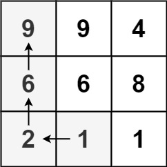
Source visual: an increasing path of length four.
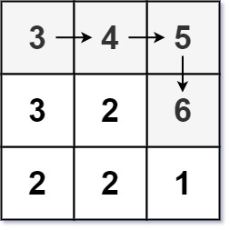
Source visual: adjacent increasing cells form the path.
Example 1
Input:[[9,9,4],[6,6,8],[2,1,1]]
Output:4
Example 2
Input:[[3,4,5],[3,2,6],[2,2,1]]
Output:4
Approach: Cache the best path beginning at each cell. From a cell, only move to a strictly larger neighbour.
public classLongestIncreasingPathMatrix {
private static final int[][] DIRECTIONS = {{1, 0}, {-1, 0}, {0, 1}, {0, -1}};
public static voidmain(String[] args) {
int[][] matrix = {{9, 9, 4}, {6, 6, 8}, {2, 1, 1}};
System.out.println(longestIncreasingPath(matrix));
}
public static intlongestIncreasingPath(int[][] matrix) {
int[][] memo = new int[matrix.length][matrix[0].length];
int longest = 0;
for (int row = 0; row < matrix.length; row++) {
for (int column = 0; column < matrix[0].length; column++) {
longest = Math.max(longest, dfs(matrix, memo, row, column));
}
}
return longest;
}
private static intdfs(int[][] matrix, int[][] memo, int row, int column) {
if (memo[row][column] != 0) {
return memo[row][column];
}
int longest = 1;
for (int[] direction : DIRECTIONS) {
int nextRow = row + direction[0];
int nextColumn = column + direction[1];
if (
nextRow >= 0 && nextRow < matrix.length &&
nextColumn >= 0 && nextColumn < matrix[0].length &&
matrix[nextRow][nextColumn] > matrix[row][column]
) {
longest = Math.max(longest, 1 + dfs(matrix, memo, nextRow, nextColumn));
}
}
memo[row][column] = longest;
return longest;
}
}
TimeO(mn)SpaceO(mn)
Time: Memoization means each cell computes its outgoing four-neighbour choices only once.
Space: The memo table has one value per cell; recursion can also reach a path of that size.
146. Word Search
Optimized implementation: This second source entry contains no code; DFS backtracking marks the active path in place.
Source visual: adjacent cells can form the requested word.
Example 1
Input:board, word = "ABCCED"
Output:true
Example 2
Input:board, word = "ABCB"
Output:false
Approach: Start from each possible first character, search four directions, and temporarily mark a used cell so one path cannot reuse it.
public classWordSearchOptimized {
public static voidmain(String[] args) {
char[][] board = {{'A', 'B', 'C', 'E'}, {'S', 'F', 'C', 'S'}, {'A', 'D', 'E', 'E'}};
System.out.println(exist(board, "ABCCED"));
}
public static booleanexist(char[][] board, String word) {
for (int row = 0; row < board.length; row++) {
for (int column = 0; column < board[0].length; column++) {
if (search(board, word, row, column, 0)) {
returntrue;
}
}
}
returnfalse;
}
private static booleansearch(char[][] board, String word, int row, int column, int index) {
if (index == word.length()) {
returntrue;
}
if (
row < 0 || row == board.length || column < 0 ||
column == board[0].length || board[row][column] != word.charAt(index)
) {
returnfalse;
}
char saved = board[row][column];
board[row][column] = '#';
boolean found =
search(board, word, row + 1, column, index + 1) ||
search(board, word, row - 1, column, index + 1) ||
search(board, word, row, column + 1, index + 1) ||
search(board, word, row, column - 1, index + 1);
board[row][column] = saved;
return found;
}
}
TimeO(mn × 4ᴸ)SpaceO(L)
Time: Each of mn starting cells can branch to at most four neighbours for each of L word characters.
Space: The active DFS call stack holds at most L cells; the board itself is marked and restored in place.
147. Game of Life
Optimized implementation: The original has no code; two bits per cell preserve the old state while the next generation is written in place.
Source visual: cells update simultaneously into the next generation.Source visual: neighbour counts determine the new cell state.
Example 1
Input:[[0,1,0],[0,0,1],[1,1,1],[0,0,0]]
Output:[[0,0,0],[1,0,1],[0,1,1],[0,1,0]]
Example 2
Input:[[1,1],[1,0]]
Output:[[1,1],[1,1]]
Approach: Bit 0 stores the old cell state; bit 1 stores the next state. Shift right after every cell has been evaluated.
Time: Each tree node is visited once and has its child references exchanged.
Space: The recursion stack holds at most one root-to-leaf path of height h.
152. Rotate a 2D Array by 90 Degrees
Optimized implementation: The original has no solution; transpose a square matrix, then reverse each row in place.
Example 1
Input:[[1,2,3],[4,5,6],[7,8,9]]
Output:[[7,4,1],[8,5,2],[9,6,3]]
Example 2
Input:[[1,2],[3,4]]
Output:[[3,1],[4,2]]
Approach: Transposition swaps across the main diagonal; reversing every row converts that transpose into a clockwise 90-degree rotation.
import java.util.Arrays;
public classRotate2DArray {
public static voidmain(String[] args) {
int[][] matrix = {{1, 2, 3}, {4, 5, 6}, {7, 8, 9}};
rotateClockwise(matrix);
System.out.println(Arrays.deepToString(matrix));
}
public static voidrotateClockwise(int[][] matrix) {
int size = matrix.length;
for (int row = 0; row < size; row++) {
for (int column = row + 1; column < size; column++) {
int temporary = matrix[row][column];
matrix[row][column] = matrix[column][row];
matrix[column][row] = temporary;
}
}
for (int[] row : matrix) {
reverse(row);
}
}
private static voidreverse(int[] values) {
int left = 0, right = values.length - 1;
while (left < right) {
int temporary = values[left];
values[left++] = values[right];
values[right--] = temporary;
}
}
}
TimeO(n²)SpaceO(1)
Time: Transposing and reversing each touch O(n²) matrix entries.
Space: Rotation is performed in the supplied square matrix with one temporary integer.
Sorting algorithms
These comparison sorts are useful for interviews because they demonstrate loops, invariants, and in-place array operations. In production Java, prefer Arrays.sort unless the exercise requires an implementation.
Algorithm
Best
Average / Worst
Extra Space
Use case
Bubble sort
O(n)
O(n²)
O(1)
Learning; very small inputs
Selection sort
O(n²)
O(n²)
O(1)
When minimizing swaps matters
Insertion sort
O(n)
O(n²)
O(1)
Small or nearly sorted inputs
Practice backlog
These problems were identified in the legacy notes but do not yet have a reviewed solution in this guide. They are intentionally kept separate from solved material.
Strings
Largest palindromic substring
String compression
Duplicate character detection
Reverse a string without moving special characters